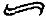

Belki de en önemli bölünme, dindar olanlarla dindar olmayanlar arasında değil ölümden korkanlarla korkmayanlar arasındadır. Bu yüzden dört kategoriye ayrılıyoruz ve hangi iki kategorinin kendini üstün gördüğü ortada: İnançları olduğu için ölümden korkmayanlar ve inançları olmamasına karşın ölümden korkmayanlar. Bu iki grup ahlaki açıdan en yüksek düzeyde bulunuyor. Üçüncü düzeyde, inançları olmasına karşın kendilerini eski, içten gelen, ussal korkudan kurtaramayanlar var. Ve son olarak, en dipte, madalya alamamış olanlar arasında, ölümden korkan ve hiç inancı olmayan bizler yer alıyoruz.
Babamın ölümden korktuğuna eminin, annemin korkmadığınaysa enikonu kaniyim: O daha çok elden ayaktan düşmekten ve birilerine bağımlı kalmaktan korkuyordu. Eğer baban ölümden korkan bir agnostik, annemse korkusuz bir ateisttiyse, bu ark iki oğlunda yansımasını bulmuş bulunuyor. Ağabeyimle ben her ikimiz de şimdi altmışlarımızın üzerindeyiz ve ben ona [-birkaç sayfa önce-] ölüm konusunda ne düşündüğünü daha yeni sordum. Ağabeyim, “Her şeyin olduğu gibi olmasından tamamen memnunum” diye yanıt verdiğinde, acaba kendi kişisel yok oluşundan tamamen memnun olacağını mı söylemek istedi? Ve ağabeyimin felsefeyle haşır neşir olması onun yaşamın kısalığını ve onu, diyelim, gelecek otuz yıl içinde, bekleyen kaçınılmaz sonu kabullenmesini mi sağladı?
“Otuz yıl bir hayli cömertce bir rakam” diye yanıt veriyor (doğrusu, bu rakamı, onu rahat ettirmek kadar kendim için de şişirmiştim). “Önümüzdeki on beş yıl içinde ölmüş olmayı bekliyorum.
Bu gerçeği kabullendim mi? Penceremden görebildiğim şu harika gürgen ağacının önümüzdeki on beş yıl içinde yıkılıp çürüyeceği gerçeğini kabullendim mi? Kabullenme ifadesinin mot juste18 olduğundan emin değilim: Bunun olacağını biliyorum ve bu konuda yapabileceğim hiçbir şey yok. Bu gerçeği tamı tamına hoş karşıladığımı söyleyemem; ama beni kaygılandırıyor da değil - gerçekte daha hoş karşılayabileceğim herhangi bir şey de hayal edemiyorum (sonsuza değin azizlerin arasında geçirilecek yaşam benzeri bir şeyi kesinkes düşünemiyorum - bundan daha sıkıcı bir şey olabilir mi)?”
O ve ben -aynı etten kemikten yaratılmış, aynı lise ve üniversitelere gitmiş iki çocuk- nasıl da çabucak birbirimizden ayrı düşüyoruz. Ağabeyimin ölümlülük gerçeğini tartışma biçimi (her iki anlamda da) felsefi olsa da, kendi nihai yok oluşunu bir gürgen ağacı benzetmesiyle uzakta tutsa da, farkı yaratan şeyin onun felsefeyle haşır neşir yaşamı olduğunu sanmıyorum. Bana öyle geliyor ki, o ve ben bu meselelerde böyle düşünüyoruz çünkü başlangıçtan beri böyleydik. Elbette ki, hissettiklerin bu değil. Dünyaya geliyorsun, çevrene bakıyorsun, bazı çıkarsamalar yapıyorsun, kendini eski saçmalıklardan kurtarıyorsun; öğreniyor, düşünüyor, gözlemliyor ve sonuçlara varıyorsun. Kendi güçlerine ve özerkliğine inanıyorsun; kendi başarın oluyorsun. Böylelikle, yıllar içinde, ölüm korkum benim asli bir parçam oldu ve ben bunu hayal gücünün kullanılmasına bağlıyorum; oysa ağabeyimin ölümün çehresi karşısındaki mesafeliliği, onun asli bir parçası, o da bunu büyük olasılıkla mantıki düşüncenin kullanılmasına bağlıyor. Ancak ben, belki de sadece babamızın yüzünden böyleyim, o da annemizin yüzünden öyle. Genler için teşekkürler, baba!
“Gerçekten de [yok oluştan] daha hoş karşılayabileceğim herhangi bir şey daha hayal edemiyorum” diyor ağabeyim. Doğrusu ben, önümüzdeki on beş yıl (onun hesabıyla) ya da otuz yıl (benim kardeşçe armağanım) içinde tümüyle yok olup gitmekten başka daha hoş karşılayabileceğim her çeşit şeyi hayal edebiliyorum. Bir kere, gürgen ağacından daha uzun süre yaşamaya ne dersiniz? İnsanın canı istediğinde, yaşamaktan usandığında ölme seçeneğinin verilmesine ne dersiniz: İki yüzyıl, üç yüzyıl boyunca yaşamayı sürdürmek ve sonra da kendi seçtiğiniz bir vakitte, “O zaman, haydi bu işi bitirelim” diyerek kendi ötanazinizi yapmanıza izin verilmesine? Büyük filozoflarla ya da büyük romancılarla konuşarak geçirilen sonsuz bir yaşam benzeri ortamı hayal etmek niye olmasın? Ya da önceki yaşamınızda her şeyin nasıl olup bittiğinin farkında olarak; ama yine de o provada bazı değişiklikler yapabilme olanağı da tanınarak hayatınızı yeniden yaşayabileceğiniz bir tür reenkarnasyona; Budhacılıkla Groundhog Day’in bir karışımına: yeniden deneme ve farklı biçimde yapma hakkı. Bir dahaki sefere, ağabeyimin pul koleksiyonu konusundaki doğuştan öncelik iddiasına direnebilir ve Dünyanın Geri Kalan Kısmı’ndan farklı bir şeylerin koleksiyonunu yapabilirdim. Musevi olabilirdim (ya da olmaya uğraşabilirdim yahut Museviymişim gibi davranabilirdim). Evden daha önce ayrılabilirdim, yurtdışında yaşayabilirdim, çocuklarım olabilirdi, kitap yazmayabilirdim, gürgen ağacı dikebilirdim, ütopyacı bir topluluğa katılabilirdim, bütün yanlış insanlarla yatabilirdim (ya da en azından bazı farklı yanlış insanlarla), uyuşturucu düşkünü biri olabilirdim, Tanrı’yı bulabilirdim, hiçbir şey yapmayabilirdim, tamamıyla yeni hayal kırıklığı türleri keşfedebilirdim.
Annem bana, büyükbabamın ona bir zamanlar hayattaki en kötü duygunun pişmanlık olduğunu söylediğinden söz etmişti.” Büyükbabam neyi kastediyor olabilir, diye sormuştum. Babası son derece dürüst biri olduğu için (içinde mektup saklanan pufu olmamıştı onun), hiçbir fikri olmadığını söylemişti annem. Bu yüzden büyükbabamın ağzından çıkan bu söz -büyükbabamdan beklenebilecek bir söz değil ya- yanıtsız bir şekilde zamanda öylece asılı kalıyor. Ben pek az pişmanlık duyarım, gerçi yolda olan pişmanlıklar da olabilir ve ben de bu arada bu duygunun yakın ahbaplarıyla yetiniyorum: hayıflanma, suçluluk, başarısızlık anısı. Gelgelelim yaşanmamış, artık yaşanamayacak hayatlar konusunda gerçekten de gitgide artan bir merakım var ve belki de pişmanlık şu anda onların gölgelerinde saklanıyor.
Arthur Koestler intihar etmeden önce, “öbür dünyada kişilikten arınmış yaşama ilişkin bazı ürkek umutlarını” dile getirdiği bir not bıraktı. Böylesi bir dilek şaşırtıcı değil -Koestler ömrünün son yıllarının büyük bir bölümünü parapsikolojiye adamıştı- ancak benim açımdan çekici olmaktan açıkça uzak. Size tamı tamına nasıl yaşayacağınızı söyleyen, her şeyi renklendiren ve lekeleyen, ciddi olan bir dine karşıtlık sadece haftalık bir sosyal olay olan (elbette haftalık sosyal bir olayın normal hazlarından ayrı) bir dinin de pek bir anlamın olmaması gibi, ben de ölümümden sonraki yaşamımın, eğer böyle bir öneri varsa, yeryüzündeki önceki halinden daha iyi bir yaşam olmasını -tercihan temelli bir ilerleme olmasını- isterdim. Yapışkanımsı moleküler bir yeniden karışım içinde yarı bilinçsiz bir durumda oradan oraya savrulduğumu şöyle bir hayal edebiliyorum; ama bunun, hepten yok olmak karşısında herhangi bir üstünlüğü olduğunu anlayamıyorum. Böylesi bir durum için hem de ürkek umutlar beslemenin ne anlamı var? Ah oğlum, yeğlediğin şey bu değil; ancak neyin gerçek olduğunun anlaşılmasıdır. Bu konudaki anahtar önemdeki diyalog, Isaac Bashevis Singer ile Edmund Wilson arasında geçmişti. Singer, Wilson’a ölümden sonra bir çeşit yeniden yaşama inandığını söyledi. Wilson kendi açısından, yeniden yaşamak istemediğini, yaşadıkları için çok teşekkür ettiğini söyledi. Singer şöyle yanıt verdi: “Eğer yeniden yaşamak önceden yazılmışsa, bu konuda hiçbir seçim hakkın olmayacak.”
Dirilmiş bir ateistin öfkesi: İşte bu, görülmeye değer bir şey olurdu. Konu açılmışken, azizlerden söz etmenin özellikle ilginç olabileceğini düşünüyorum. Azizlerin çoğu heyecan verici yaşamlar sürdüler -katillerden saklandılar, tiranlara meydan okudular, ortaçağ kentlerinin sokak köşelerinde vaazlar verdiler, işkencelere uğradılar- hatta en sessiz sakin olanlarının bile size arıcılık, lavanta yetiştirme, Umbria kuşbilimi ve bunun gibi konularda söyleyecek bir çift lafı olabilirdi. Dom Perignon da sonuçta bir keşişti. Daha geniş bir sosyal karışımı umabilirdiniz; ama her şey “önceden yazılmışsa”, o zaman azizler, beklediğinizden daha uzun bir süre yola devam etmenizi sağlayabilirdi.
Ağabeyim yok olup gitmekten korkmuyor. “Kendime güvenerek söylüyorum bunu; yani sırf böyle bir korkuyu taşımak usdışı olacağı için değil” (Özür dilerim -araya girdim- usdışı mı? USDIŞI? Dünyadaki en ussal şeydir bu - akıl nasıl olur da aklın sonundan ussal bir şekilde nefret etmez ve korkmaz?) “Ömrümde üç kez ölmek üzere olduğuma inandım (son seferinde bir reanimasyon koğuşundaydım); her bir seferinde de duygusal bir tepkim oldu (bir başka sefer, kendimi böyle bir duruma soktuğum için yakıcı bir öfke duydum kendime, bir seferinde işlerimi karışık bir halde bırakmak düşüncesi küskünlükle dolu bir utanç saldı içime) ama hiçbir seferinde korku duymadım.” Hatta ağabeyim ölüm döşeğindeyken ağzından sakin bir şekilde şu sözler çıktı. “Son seferinde az daha ölüyorken, son sözlerim neredeyse şunlar oldu: ‘Bekker’in Aristoteles kitabını Ben alsın.’ “ Ağabeyim karısının, onun bu sözünü yeterince sevecen bulmadığını da ekliyor.
Bugünlerde ölümü eskisinden daha fazla düşündüğünü itiraf ediyor, “bunun bir ölçüde sebebi de eski dostların ve meslektaşların birer birer ölüyor olmaları.” Bu gerçeğe haftada bir kez sakince bakıyor ağabeyim; oysa ben, herhangi bir şekilde yumuşaklık ya da feylesofluk kazanmaksızın, yıllar boyunca, çabaladım durdum. Ölüm farkındalığı lehine birkaç argüman bulmaya çalışabilirdim; ama bunların da inandırıcı olacaklarından emin değilim. Ölüme meydan okumanın (hayır, bu fazlasıyla etkin, fazlasıyla yapmacık ve kahramanca görünüyor - edilgin kip daha iyi: ölüm tarafından meydan okunmanın) beni daha bilge kılması ya da daha ciddi, yahut gerçekte daha... bilmem ne yapması şöyle dursun, onunla daha büyük bir uzlaşmaya girmemi sağladığını da ileri süremem. Yok oluşumuzun düzenli olarak bilincine varmaksızın hayatın tadını gerçekten de çıkaramayacağımızı bir argüman olarak ileri sürmeyi deneyebilirdim: Tada yoğunluk veren şey limonu sıkmak, bir tutam tuz eklemektir. Ama ölümü yadsıyan (ya da dindar) dostlarımın bir demet çiçeği/ bir sanat yapıtını/ bir kadeh şarabı benden daha az takdir edeceklerini gerçekten de düşünüyor muyum? Hayır!
Öte yandan, sadece insanın bağrından gelen bir mesele değil bu. Onun tezahürleri olabilir - insanın tüylerini diken diken eden bir dürtüden zihin bulandırıcı bir dehşete, tanıdık olmayan bir otel odasındaki ani alarm zilinden kentin üzerinde feryat figân öten korna seslerine kadar. Ama ben ussal (evet USSAL) korkuya kapıldığımı yineliyor ve bunda ısrar ediyorum. 1425 yılında Paris’teki Cimetière des Innocents’ın [Masumlar Mezarlığı] bir duvarına resmedilmiş olan bilinen en eski Ölüm Dansı, şöyle bir metinle başlar: “O créature roysonnable/Qui desires vie eternellè” [Ey ussal yaratık/ Sen ki sonsuz yaşamı arzularsın]. Ussal korku: Romancı dostum Brian Moore insanın Cizvitlerce yapılmış eski bir tanımını aktarmaktan hoşlanırdı: “un être sans raisonnable raison d’être”. Var olmak için ussal bir varlık nedeni olmayan bir varlık.
Ölüm farkındalığı bir yazar oluşumla mı bağlantılı? Belki de. Ama eğer durum buysa, bilmek ya da sorgulamak istemiyorum. Yıllarca psikoterapi gördükten sonra sonunda niçin komik olmaya gereksinim duyduğunu anlayan ve anladıktan sonra da işini bırakan bir komedyeni anımsıyorum. Bu yüzden bu riske girmek istemezdim. Gerçi şu Hangisini Yeğlerdiniz seçimlerinden birini hayal edebiliyorum: “Bay Barnes, durumunuzu inceledik ve ölüm korkunuzun yazınsal alışkanlıklarınızla yakından bağlantılı olduğu ve bu alışkanlıkların, mesleğinizdeki birçok kişi gibi, ölümlülük karşısındaki önemsiz bir tepkiden ibaret olduğu sonucuna vardık. Adınızın ve bireyselliğinizin tanımlanamayan bir yüzdesi fiziksel ölümünüzden sonra yaşamaya devam etsin diye hikâyeler uyduruyorsunuz ve bunun beklentisi size bir çeşit avuntu sağlıyor. Ölmeden önce ya da öldükten kısa bir süre sonra pekâlâ unutulabileceğinizi, bütün insan soyu gibi, bütün yazarların sonunda unutulacaklarını entelektüel olarak kavramış olsanız da bu iş size yapmaya değer görünüyor. Yazmanın sizin için ussal olana içten gelen bir tepki mi, yoksa içsel olana ussal bir tepki mi olduğundan emin olamayız. Ama işte göz önünde tutmanız gereken bir şey. Ölüm korkusunu alıp götüren yeni bir beyin ameliyatı geliştirdik. Genel bir anestezi gerektirmeyen yalın bir prosedür - aslında, ameliyatı gerçekleşme sürecini ekrandan seyredebilirsiniz. Gözünüzü şu ateşimsi turuncu noktadan ayırmayın ve renginin gitgide soluşunu izleyin sadece. Tabii, bu ameliyatın aynı zamanda yazma arzunuzu ortadan kaldırdığını farkedeceksiniz; ama meslektaşlarınızın çoğu bu tedaviyi seçme kararını verdi ve tedaviyi çok yararlı buldu. Genel olarak toplum da, piyasada daha az yazar bulunmasından ötürü bir yakınmada bulunmadı.”
Bunun üzerinde elbette şöyle bir düşünmem gerekirdi. Daha önce yayımlanmış olan yapıtlarımın kendi başlarına nasıl bir durum sergilediklerini ve bundan sonraki kitabımın gerçekte hayal ettiğim kadar iyi olup olmadığını merak edebilirdim. Ama umarım bu öneriyi geri çevirirdim ya da en azından pazarlık ederdim, onları bana daha çok şey verdirmeye çalışırdım. “Ölüm korkusunu değil de ölümü ortadan kaldırmaya ne dersiniz?” Ciddi bir şekilde ayartıcı olurdu bu. Siz ölümden kurtarıyorsunuz, ben de yazmaktan vazgeçiyorum. Var mısınız bu anlaşmaya?
Ağabeyimle ben ortaklaşa bazı şeyleri miras olarak aldık. Sahip olduğumuz dört kulak, aralarında, ağır işitenlerin kullandıkları üç cihaz peydahladı. Benim sağırlığını sol yanda. Jules Renard, Journal’e, 25 Temmuz 1892 tarihiyle şöyle bir not düşmüş: “Sol kulağı işitmiyor; kalbinin bulunduğu yan işitmiyor.” (Alçak herif!) Kulak-burun-boğaz uzmanı rahatsızlığımın tanısını koyduğunda, buna neden olacak herhangi bir şey yapmış olup olamayacağımı sordum. “İnsan kendine Meniere hastalığı veremez” diye yanıtladı: “Doğuştan bu.” “Aa, iyi o zaman” dedim, “annemle babamı kınamam için bir gerekçe.” Onları kınıyor değilim. Onlar sadece genetik görevlerini yapıyorlardı, onlara aktarılmış olanı aktarıyorlardı, bildik şu eski hikâye; balçığıyla, bataklığıyla, mağarasıyla şu evrim hikâyesi - bunlar olmasa benim yakınıp duran benliğim de var olmazdı.
Doğuştan kötü çalışan bu kulakların dört beş santim ötesinde, kafatasımın içinde, ölüm korkusu yatıyor; ağabeyimin kafatasının içindeyse, onun yokluğu. Din ya da onun yokluğu yakında bir yerde nerede duruyor? 1987’de Amerikalı bir sinirbilim uzmanı beyinde tam olarak hangi noktada belli bir elekriksel dengesizliğin dinsel duyguları tetiklediğini saptadığını ileri sürdü: Buna “Tanrı noktası” deniliyor; G noktasının farklı, daha iktidarlı bir biçimi. Bu araştırmacı yakın zamanlarda “Tanrı miğferi”ni tasarladı; bu, alet şakak loblarında hafif bir manyetik alan yaratarak sözümona dinsel durumlara neden oluyormuş. Söz konusu uzman gözüpeklik ederek -ya da düşüncesizlik- bu miğferi belki de gezegendeki en az etkilenebilecek kişi olan Richard Dawkins’in üzerinde denedi; Dawkins kendisinden beklenildiği gibi bu İçkin Varlık’ın titreşiminin zerresini bile duymadığını söyledi.
Başka araştırmacılar yeri saptanabilecek tek bir Tanrı noktası olmadığına inanıyorlar. Bir deneyde, on beş Karmelit rahibesinden en derin mistik deneyimlerini anımsamaları istendi: Gerçekleştirilen taramalar beyinlerinin en azından on iki ayrı bölgesinde elektriksel aktivite ve kan oksijen düzeyinin arttığını ortaya koyuyor. Gerçi inancın bu nöromekaniği, ne Tanrı’yı bulacak ne onun varlığını (ya da yokluğunu) kanıtlayacak ne de türümüzün tanrılara olan inancının altında yatan nedenin varlığını temellendirecek. Bu, evrimci psikoloji dinin, birey ve grup için uyarlanmaya yönelik yararlılığını ortaya koyduğunda gerçekleşebilir. Gerçi bunu bile, sınırlanmalardan kaçışın büyük uzmanı olan Tanrı için mi yapacak? Güvenmeyin buna. Tanrı son 150 ya da o kadar bir süredir yaptığı gibi, evrenin tarama yapılamayacak bir bölümüne taktiksel bir geri çekilme gerçekleştirecek. “Belki de Tanrı’nın anlaşılamaz oluşu gerçeği, O’nun varlığının en güçlü kanıtıdır.”
Kardeşler arasındaki farklılıklar: Benim ergen mahcubiyetinin en yüksek noktasında olduğum bir yaşta, anne babamın arkadaşlarından biri babama, benim önümde, hangi oğlunun daha akıllı olduğunu sormuştu. Babam gözünü -o kibar, liberal görüşlü gözünü- benden ayırmayarak dikkatli bir şekilde şöyle yanıt vermişti: “Jonathan herhalde. Julian daha çok değişken mizaçlı biri, sen de öyle demez miydin, Ju?” Bu değerlendirmeye alttan alta katılmak zorunda kaldım (zaten muhtemelen aynı görüşteydim). Ama aynı zamanda içinde barındırdığı örtmeceleri de fark ettim. Dünya’nın Geri Kalan Kısmı, Pes Ses, Değişken Mizaç: hıh.
Annemin her iki oğlunda gözlemlediği farklılıklar benim daha çok hoşuma gidiyordu. “Çocukluklarında, eğer hastaysam, Julian yatağa tırmanır ve bana sokulup sarılırdı, kardeşi de bana bir bardak çay getirirdi.” Annemin aktardığı bir başka farklılık; ağabeyim bir seferinde pantolonuna doldurmuş ve bunun üzerine şu ifadeyi kullanarak yanıt vermişti: “Bir daha asla olmayacak” - Ve bir daha da olmadı; oysa ben, o çocuk halimle bağırsaklarımı kontrol altına alamadığımda, kakamı döşeme tahtaları arasındaki çatlaklara neşeyle bulaştırırken keşfedildim. Ancak, en sevdiğim farklılaşma noktam, annemizin hayatında çok daha sonraları ortaya çıktı. Artık her iki oğlu da kendi alanlarında tanınmış kişiler olmuşlardı. Onlarla gururlanmasını şöyle dile getirmişti annem: “Oğullarımdan biri okuyabildiğim ama anlayamadığım kitaplar yazıyor, ötekiyse anlayabildiğim ama okuyamadığım kitaplar.”
Farklı doğalarımız üzerinde ne zaman biraz uzun düşünecek olsam bunu çoğu kez doğumla ilgili bir ayrıntıya mal ederdim. Ağabeyimin doğumundan soma, annem streptokok bakterisinin neden olduğu bir enfeksiyondan hasta düşmüş. Ağabeyimi emziremediğinden, 1942’nin savaş zamanı İngiltere’sinde zar zor elde ettiği şişelere konmuş yulaf lapasıyla beslemiş onu. Benini 1946’daki doğumumun tıbbi bir komplikasyon olmaksızın gerçekleştiğini biliyordum, bu yüzden de anne sütü almış olmalıyım. Kardeşler arasındaki rekabet anlarında hep bu temel gerçeğe döner dururdum. O akıllı olandı, buz gibi entelektüel ve pratik eylem adamıydı, kakasını tutan ve çay getirendi; bense değişkendim, sokulgan olandım, kaka bulaştırandım, duygusal olandım. O Britanya İmparatorluğu’na sahip olduğu gibi zekaya da sahipti; ben bütün zengin çeşitliliği içinde Dünya’nın Geri Kalan Kısmı’na sahiptim. Bu. acınacak bir şekilde indirgemeci bir yaklaşımdı, elbette; ne zaman eleştirmenler ve yorumcular benzer bir indirgemeciliği sanata uygulayacak olsalar (basitleştirilerek bir astigmatizm vakasına indirgenmiş El Greco, yaklaşan delilik durumuyla açıklanan Schumann’ın müziği) fena halde kızardım. Gelgelelim, gereksinim duyduğum bir zamanda bu açıklamaya canı gönülden sahip çıkıyordum - yani duygusal yaşamımı gözlemleyen kişilerin, benim Dünya’nın Geri Kalan Kısmı’nın koleksiyonunu yapmaktan çok Norveç ve Faroe Adaları’nın ender posta pullarını toplamakta uzmanlaştığım sonucuna varmış olabilecekleri bir zamanda.
Ölüm korkusu Tanrı korkusunun yerini alıyor. Ama Tanrı korkusu -yaşamın rizikoları ve bilinmeyen kökenli felaketler karşısındaki kırılganlığımız göz önünde tutulursa, tümüyle makul eski bir ilke- en azından görüş alışverişine olanak veriyordu. Konuşa konuşa Tanrı’yı İntikamcı bir tanrı olmaktan çıkardık ve O’nu Merhameti Sonsuz bir tanrı olarak yeniden damgaladık; Ahit’ler ve İşçi Partisi gibi, O’nu Eski Tanrı’dan Yeni Tanrı’ya çevirdik. O’nun sarsılan imgesini yeniden yükselttik, bu imgeyi kızakların üzerine yerleştirip havanın daha güneşli olduğu bir yere çektik. Aynısını ölüm için yapamayız. Ölümü konuşa konuşa susturamayız ya da onunla herhangi bir şekilde görüşme yapamayız; o, görüşme masasına gelmeye yanaşmaz. İntikamcı ya da Merhametli, yahut Merhameti Sonsuzmuş gibi görünmesi gerekmez. Hakaretlerden, yakınmalardan ya da tepeden bakmalardan etkilenmez. “Ölüm bir sanatçı değildir”: Hayır değildir ve olduğunu da hiçbir zaman ileri sürmezdi. Sanatçılar güvenilmezdir, oysa ölüm sizi asla hayal kırıklığına uğratmaz, haftanın yedi günü çağrıldığında gelir ve sekiz saatlik üst üste üç vardiya çalışmaktan da mutludur. Piyasada mevcut olsalar ölümün hisse senetlerini satın alırdınız; kazanma olasılığınız ne denli düşük olursa olsun, onun üzerine bahse girerdiniz. Ağabeyimle benim büyüme çağlarımızda, Dr. Barbara Moore adında, küçük çapta ünü olan biri vardı; Moore uzun mesafe yürüyüşçüsüydü ve vejetaryenliğin propagandasını yaparak dünyanın çehresini değiştireceğini düşünüyordu; bir seferinde bir gazeteye, biraz hırslı bir şekilde, 100 yaşında çocuk sahibi olacağı ve !5O’sine kadar yaşayacağı yolunda bir demeç vermişti. Yolun yarısına kadar bile ulaşamadı. Yetmiş üçünde öldü ve ölümü hevesli bir bahisçinin ellerinde de gerçekleşmedi. Tuhaf bir şekilde, ölümün işini kendi gördü, kendini yok edesiye aç bıraktı. Ölüm için borsada güzel bir gündü.
Ahlaki olarak üstün Kategori Bir’de yer alan ateistler (Tanrı yok, ölüm korkusu yok) bizlere bir tanrının eksikliğinin evrene karşı duyduğumuz hayret ve hayranlık duygusunu hiçbir şekilde azaltmaması gerektiğini söylüyorlar. Kar tanesinin sahip olduğu harmoniden çarkıfelek çiçeğinin karmaşık çekiciliğine ya da bir güneş tutulmasının görkemli gösterisine kadar Tanrı’nın bütün evreni özellikle bizler için yarattığını hayal ettiğimizde her şey hem mucizevi hem de kullanımı kolay görünmüş olabilir. Ama her şey yine de İlk Hareket Ettirici olmaksızın sürüp gidiyorsa, ne diye daha az harika ve daha az güzel olsun? Bizler, sanki Tanrı televizyonlarda gösterilen vahşi doğa programlarının bir çeşit üstün nitelikli uzmanıymış gibi, ne diye bize bir şeyleri gösterecek bir öğretmene gereksinim duyan çocuklar olalım? Sözgelimi, Antarktika pengueni, Darwin öncesi ya da sonrası olsun, muhteşem ve komik olduğu kadar, zarif ve beceriksiz görünüşlüdür. Büyüyün de, çifte sarmalın çekiciliğini, derin uzayın gece parıltısını, tüylerin evrim yasalarını kanıtlayan sonsuz ayarlamalarını ve insan beyninin organize ve kavranması zor mekanizmasını birlikte inceleyelim. Böyle şeylere hayret etmek için bir tanrının bize yardım etmesine niçin gerek duyuyoruz?
İhtiyacımız yok. Olduğu söylenemez. Gelgelelim var olan şeyler hiçlikten geliyorsa, eğer her şey mekanik olarak hiç kimsenin ortaya koymadığı bir programa göre işliyorsa ve eğer bütün bunları algılamalarımız sadece biyokimyasal faaliyet anlarıysa, birkaç sinapsın çat pat diye salt açılıp kapanmasıysa, o zaman bütün bu hayranlık duygusu nereye varıyor? Bundan biraz daha kuşkulanmamız gerekmez mi? Bokböceği yuvarladığı kocaman dışkı topunun büyüklüğü karşısında pekala ilkel bir hayranlık duygusuna sahip olabilir. Bizim bu hayranlık duygumuz sadece daha sosyetik bir versiyon mu? Kategori Bir’de yer alan ateist, belki de, diye yanıt verebilirdi; ama bu en azından gerçek olanın bilgisi üzerine temellenmiştir. Bunu, bir kavun kabuğunun üzerindeki çizgilerin Tanrı’nın elinden çıktığını ileri süren Rousseau’nun şu tilmizinin aşırı duygusal fantezileriyle bir karşılaştırın - Her Şeye Kadir Tanrı biz çocukları için, tıpkı bir dadı gibi meyveyi adil ve eşit parçalara bölüyor. Sizler akıllara ziyan böylesi bir düşünme tarzına, gastronomun acıklı safsatasına geri dönmeyi ister misiniz? Hakikat duygunuz nerede?
Umarım, hâlâ yerinde duruyordur. Gerçi -sırf meraktan- bir ateistin evrene hayranlık duygusunun, niceliksel olarak, inanan bir kişinin duygusu kadar büyük olup olmadığını bilmek yararlı olurdu. Böyle şeyleri ölçemememiz için hiçbir sebep yok (şimdi ölçemiyorsak, yakında ölçebiliriz). Dişi ve erkek orgazmı sırasında harekete geçen sinaps sayısını karşılaştırabiliyoruz -rekabetçi tipler için çok kötü bir haber- o zaman ne diye benzeri bir testi denemeyelim? Çarkıfelek çiçeğinin hâlâ İsa’nın çektiği ıstırapları temsil ettiğine inanan bir keşiş bulun: Yaprağın mızrağı, polenleri taşıyan kısmın beş yarayı, sürgünlerin kırbaçları, yumurtalık sütununun haçın dikey kısmını, erkek organların çekiçleri, yumurtalığın üç dar uzantısının üç çiviyi, çiçeğin içindeki etli ipliklerin dikenlerden yapılma tacı, koruyucu katmanın haleyi, beyaz renk tonunun saflığı ve mavi renk tonununsa cenneti simgelediğine inanan bir keşiş. Bu keşiş aynı zamanda, yaşanan her bir gün İsa’nın papazlığının bir yılına karşılık gelmek üzere çiçeğin tamı tamına üç gün boyunca açık kaldığına da inanırdı. Elektronik bağlantılar aracılığıyla onu televizyonda program yapan bir botanikçinin yanına çıkarın da kimin daha fazla sinapsı harekete geçirdiğini görelim. Sonra, bu elektronik donanımı bir konser salonuna götürelim ve benim “hiç de dindar olmayan” arkadaşım J.’yi, Haydn’ın şu missa’sını, büyük bir müzik parçası olduğu kadar -ya da böyle bir müzik yerine- sonsuz bir hakikatin ifadesi olarak dinleyecek inanan bir kişiye karşı test edelim. O zaman, dini dinsel sanattan ve Tanrı’yı da evrenden çıkardığınızda neler olduğunu görebilir ve ölçebiliriz.
Bu, bilimsel yasaların güzelliği karşısında tam da bunlar Tanrı’nın elinden çıkmadığı için daha fazla bir heyecan duyan şu soğuk kafalar için umutsuzca bir çaba gibi görünebilir. Ama bu, bir nostalji gibi görünüyorsa, benim hiç bilmediğim bir şeyin nostaljisidir - itiraf etmek gerekir ki daha zehirli çeşitten bir nostalji. Belki de benim durumumun bir başka parçası, insan inancını taze ve gençken, cüretli ve tehlikeli şeyler yaparken kaybettiğinde, inancını kaybedenlere -ya da hakikate erişenlere- imrenmektir. İntihar eden ve Kilise karşıtı olan François Renard, bir papazın yardımı ve hizmeti olmaksızın Chitry mezarlığına gömülmüş olan ilk kişiydi. Bunun 1897’deki ücra bir Burgundy kasabasında yaratacağı şoku bir hayal edin; inançsızlığın gururunu bir hayal edin. Belki de ben şeyden mustaribin - şeyden, buna tarihsel pişmanlık deyin de büyükbabam yakınlık duyabilsin.
“Mutlu bir ateist.” Kolej şapeli rahibine ve yarış tekneleri kaptanına estetik esrimenin dinsel huşu duygusunun yerini aldığı anahtar önemdeki an olarak ileri sürebileceğim tarih, 1811’in Ocak ayı; yer, Floransa. Stendhal’in ayın yirmi sekizindeki doğum gününden - ya da daha doğrusu, henüz nom de plumeünü19 almamış olan Henri Beyle’in doğum gününden birkaç gün önceydi. Beyle/Stendhal Tanrı’ya inanmıyordu ve O’nun varlığıyla mantıki bir bilmezden gelme oyunu oynuyordu. “Tanrı’nın kendini ifşa etmesini beklerken, bu hüzünlü dünyayı onun başbakanı Rastlantı’nın yönettiğine de inanıyorum.” Sözlerini şöyle sürdürüyordu: “Dürüst bir insan olduğumu hissediyorum ve başka türlü olmak da olanaksız olurdu, varolmayan bir Yüce Varlık’ın hoşuna gitmek için değil, alışkanlıklarınla, önyargılarımla barış içinde yaşamaya, yaşamıma amaç ve düşüncelerime besin vermeye gereksinim duyan kendim için.”
Beyle 1811’de aşırılmış bilgilerle dolu müzik biyografilerinin yoksul düşmüş bir yazarıydı ve İtalyan resim sanatı üzerine hiçbir zaman tamamlayamadığı bir tarih kitabına başlamıştı. İtalya’ya ilk kez on yedi yaşındayken Napoleon’un ordusunun yük katarı arasında gelmişti. Ordu Ivrea’ya ulaştığında, Beyle hemen kentin operasını aramaya gitmişti. Karşısında entipüften bir kumpanyanın Cimarosa’nın Il Matrimonio segreto’sunu oynadığı üçüncü sınıf bir tiyatro salonu buldu; ama bu ona bir vahiy gibi göründü: kızkardeşine olayı “un bonheur divin”20 olarak aktardı. O andan başlayarak, İtalya’nın derin ve değişken karakterli bir hayranı oldu ve onun bütün yüzlerine duyarlı kaldı; bir keresinde, yıllar sonra Milano’ya dönerken, “sokaklardaki at dışkısının o özel kokusunun” kendisini gözyaşlarına boğduğunu belirtti.
Ve şimdi Floransa’ya ilk kez geliyordur. Yola çıktığı yer Bologna’dır; at arabası Apeninler’i aşar ve kente doğru inmeye başlar. “Kalbim içimde delice atıp duruyordu. Nasıl da çocuksu bir heyecandı!” Yol kavşağında, katedral, Brunelleschi’nin ünlü kubbesiyle birlikte, gözler önüne serilir. Stendhal kent kapısında, Floransa’ya bir hacı gibi yürüyerek girmek için arabayı ve de bagajını terk eder. Kendini Santa Croce Kilisesi’nde bulur. Burada Michelangelo ile Galileo’nun kabirleri vardır; yakında da Canova’nun Alfieri büstü bulunmaktadır. Diğer büyük Toskanyalıları düşünür: Dante’yi, Boccaccio’yu, Petrarca’yı. “Beni altüst eden heyecan dalgası öylesine derindi ki dinsel huşu duygusundan ayırt edilmesi güçtü.” Bir rahipten Niccolini Şapeli’ni açmasını ve ona freskoları göstermesini ister. “Katlanır bir rahip sırasının basamağına oturur ve gözleri tavandaki freskolar üzerinde uzun uzun gezinebilsin diye başını geriye sıranın üzerine doğru atar.” Kent ve kentin evlatlarının yakınlığı Beyle’i şimdiden transa yakın bir duruma sokmuştur. Artık, o “yüce güzelliğin temaşası içine çekilmiştir”; “sanatın ilahi yakınlıklarının heyecanın tutkulu duyumsallığıyla kaynaştığı duyarlığın en yüce derecesine” erişir. İtalikler ona aittir.
Bütün bu olup bitenlerin fiziksel sonucu bir baygınlık nöbetidir. “Santa Croce’nin sundurmalı giriş kapısından çıkarken, şiddetli bir kalp çarpıntısına kapıldım... İçimdeki yaşam pınarı kurumuştu ve sürekli yere düşme korkusuyla yürüdüm.” Beyle {Roma, Napoli ve Floransa başlıklı anlatıyı yayımladığı dönemde artık Stendhal olarak anılıyordu) semptomlarını betimleyebiliyor ama durumunun adını koyamıyordu. Bununla birlikte, gelecek kuşaklar adını koyabilir; çünkü gelecek kuşaklar her zaman daha iyisini bilir. Şimdi ona şu kadarını söyleyebiliriz ki, Beyle, Stendhal Sendromu’ndan mustaripti. 1979’da Floransalı bir psikiyatrın tanısını koyduğu bir durumdu bu; söz konusu psikiyatr kentin sanat hazinelerinin güzelliğine maruz kalmanın yol açtığı neredeyse yüz baş dönmesi ve bulantı vakasının kaydını tutmuştu. Firenze Spellacolo’’nun yeni bir sayısı size yardımcı olacak şekilde, bu tür bir sendroma karşı duyarlıysanız kaçınılacak, ya da daha özel olarak, buna estetik olarak katlanmayı isteyecek olursanız, ziyaret edilecek yerlerin bir listesini veriyor. En üstte yer alan üç yer “Giotto’nun freskolarıyla birlikte Santa Croce’nin Cappella Niccolini”si, Michelangelo’nun Davud tablosu için Accademia ve Botticelli’nin Primavera’sı için de Uffizi.
Kuşkucu bir kişi, yukarıda bahsi geçen yüz kişinin ya da yirminci yüzyıl ziyaretçilerinin gerçekten de şiddetli bir estetik tepkiden mi, yoksa sadece modern turist yaşamının zorluklarından mı mustarip olduğunu merak edebilir: kentin yol açtığı kafa karışıklığı, zaman tarifelerinin yarattığı stres, başyapıtları görmek istemekten kaynaklanan kaygı, aşırı enformasyon yükü ve havalandırmanın soğuğuna karışan çok fazla yakıcı güneş. Aşırı kuşkucular Stendhal’in kendisinin gerçekten de Stendhal Sendromu’ndan mustarip olup olmadığını merak edebilirler. Onun betimlediği şey, art arda gelen güçlü izlenimlerin biriken bir etkisi olabilirdi: dağlar, kubbe, varış, kilise, kudret sahibi ölüler, büyük sanat - ve bunlardan dolayı da en son bayılma. Psikiyatrik bakış açısındansa tıbbi bir görüş de yararlı olabilirdi: Başınız arkaya eğik durumda oturarak boyalı bir duvara uzun süre baktıktan sonra ayağa kalkıp da bir kilisenin serin karanlığından bir kentin parlak, tozlu ve hummalı çalkantısına adım atacak olursanız, biraz baygınlık geçirmeyi beklemez misiniz?
Ama yine de, hikâye olduğu gibi kalıyor. Beyle/Stendhal modern sanat âşığının ağababası ve doğrulanmasıdır. O, Floransa’ya gitti ve büyük sanat yapıtları karşısında bayıldı. Bir kiliseye girmişti; ama dindar bir adam değildi ve kendinden geçmesi tümüyle dünyevi ve estetikti. Santa Croce’deki Giotto’lar karşısında bayılan bir adamı, dahası onları daha önceki röprodüksiyonların engellemediği bir zihinle ve gözle gördüğü için bayılan bir adamı kim anlamaz ve ona imrenmez ki? Hikâye gerçek, özellikle de öyle olmasını istediğimiz için, gerçek olmasına gereksinim duyduğumuz için.
Santa Croce’ye Beyle’den beş yüzyıl önce gelen gerçek hacılar, Giotto’nun yeni yapılmış Aziz Francisco’nun yaşam döngüsü freskosunda, onlara mutlak hakikati söyleyen ve onları hem bu dünyada hem de öbür dünyada kurtarabilen bir sanat görürlerdi. Dante’yi ilk kez okuyan ya da Palestrina’yı ilk kez dinleyenler için de aynı şey söz konusu olurdu. Daha güzel çünkü gerçek, daha gerçek çünkü güzel, sonsuz bir paralel aynalar ortamında sürüp giden bu neşe saçan çoğaltımlar. Büyük sanat yapıtları önünde tümüyle metaforik bir anlamda istavroz çıkarıp diz çöktüğümüz laik bir dünyada, sanatın bize hakikati söylediğine inanma eğilimdeyiz -yani göreceliğin egemen olduğu bir evrende başka bir şeyden çok daha fazla hakikati ve bu hakikatin sırası gelince bizi kurtarabileceğine- bir dereceye kadar - yani bizi aydınlatabileceğine, bizi harekete geçirebileceğine, bize yükseltebileceğine, hatta bizi iyileştirebileceğine - gerçi sadece bu dünyada. Eskiden ne kadar daha basitti ve basitliği sadece dilbilgisi açısından da değildi.
Flaubert, Louise Colet’yi “sanat dini”ne değil de “sanat sevgisine” sahip olduğu için kınıyordu. Bazıları sanatı dinin psikolojik olarak dinin yerini alan bir şey olarak görüyor, böylelikle sanat hâlâ şimdi artık cenneti hayal etmeyen şu indirgenmiş yaratıklara kendilerinin ötesinde olan bir dünya duygusunu sağlıyor. Modern bir eleştirmen, Cambridge’ten Profesör S. sanatın temelde dinsel olduğunu; çünkü sanatçının “ölümün bayağı demokrasisinden kaçmak yoluyla ölümsüzlüğü hedeflediğini ileri sürüyor. Bu tumturaklı beyan, en büyük sanatların bile jeolojik zaman açısından bir göz kırpmadan daha fazla sürmediğini belirten Oxford’lu Profesör C. tarafından yalanlanıyor. Sanırım, iki beyan da birbiriyle bağdaşabilir; çünkü sanatçının motivasyonu bir sonrakindeki kozmik gerçekliği göz ardı edebilir. Ne var ki Profesör C.’nin kendine özgü tumturaklı bir beyanı var: “Sanat dini insanları daha kötü yapar; çünkü sanatçı olarak görülmeyenleri hor görmeye özendirir.” Bunda bir gerçek payı olabilir; ama en azından Britanya’da karşılaşılan daha büyük sorun, karşı yönden gelen horgörü problemidir: sanat beğenisi olmayan kendinden hoşnut cahillerden sanat yapan ve sanata değer veren kişilere karşı bir horgörü. Peki böylesi duygular onları daha iyi insanlar mı yapıyor?
“Sanat dini”: Flaubert bu ifadeyi kullandığında, snobca bir sanat tapınmasından değil, insanın kendini sanata adadığı bir uygulamadan söz ediyordu; keşişlik, kıldan gömlek giymeyi ve edimden önceki suskun, tek başına yapılan meditasyonu gerektiriyordu. Eğer sanatın bir dine benzetilmesi gerekiyorsa, bu kesinlikle üstte papalık otoriterliğinin alttaysa itaatli bir köleliğin var olduğu geleneksel Katolik tipte bir din olmayacaktır. Daha çok, ilk Kilise gibi bir şeydir: verimli, kaotik ve görüş ayrılıklarına yol açan. Çünkü her piskopos için dinsel değerlere söven biri; her dogma için bir sapkın vardır. O zamanın dininde olduğu gibi şimdi sanatta da her yanda bol bol sahte peygamberler ve sahte tanrılar mevcuttur. Yıkanmayanları dışlamaya çalışan, hermetik entelektüalizmler ve erişilemeyen rafînelikler içinde kaybolan sanatsal papazlıklar vardır (Profesör C. bunları onaylamaz). Öte yandaysa (bunlar da Profesör S. tarafından onay görmez) sahih olmayış, ticari bezirgânlık ve çocukça bir popülizm bulunur: birbirlerine yaltaklanan ve birbirleriyle anlaşan, siyasetçiler gibi oy için (ve para için) oyunlar çeviren sanatçılar. Saf olsun ya da olmasın, yüce gönüllü ya da yozlaşmış olsun, hepsi de -çok sevilen başarılı oğlanlar, kızlar ve baca temizleyecileri gibi-toz olup gideceklerdir, sanatları, önce olmasa bile onlar da çok geçmeden yok olacaktır. Gelgelelim sanatla din birbirlerini her zaman, her ikisinin de çağrıştırdığı şöylesi soyut adlar aracılığıyla gölgeleyeceklerdir: hakikat, ciddilik, hayal gücü, duygudaşlık, ahlaklılık, aşkınlık.
Tanrı’yı Özlemek benim için daha çok İngiliz Olmak gibi bir şey: esas olarak saldırı karşısında uyanan bir duygu. Ülkemin adı karalandığında, uyuşturulmuş demeyeyim ama uyuyan bir yurtseverlik harekete geçiyor. Tanrı söz konusu olduğunda da çoğu kez, İngiliz Anglikan Kilisesi’nin özellikten yoksun ve deneme kabilinden olan umutluluk çabalarından çok ateist mutlakiyetçilik karşısında kışkırtıldığımı fark ediyorum. Geçen ay, komşularımda akşam yemeğindeydim. Yarım düzine kadar konuk İsa ile havarilerini alacak kadar uzun bir mutfak masasının çevresinde dizilmişti. Aynı anda birkaç sohbet yürüyordu ki ansızın ortaya atılan bir sav tepki yaratıp ortamı değiştiriverdi. Genç bir adam (ev sahibinin oğlu) alaycı bir tonda şöyle bağırdı: “Ama Tanrı bunu niçin Oğlu için yapsın da geriye kalan bizler için yapmasın?” Nezaket kurallarından uzaklaşacak şekilde kendi lafımı yarıda bırakıp gence, “Çünkü o Tanrı, allahını seversen” diye bağırdığımı fark ettim. Tartışma yayıldı; eski bir dost ve ünlü bir akılcı olan ev sahibim C., oğluna arka çıktı: “İnsanların çarmıha gerildikten sonra nasıl hayatta kaldıkları, bazen çarmıhtan indirildiklerinde nasıl ölmedikleri üzerine bir kitap var. Muhafızlara rüşvet verilmiş olabilirdi.” Bu açıklamaya şöyle yanıt verdim: “Bunun konuyla ne ilgisi var?” O (öfkeli bir şekilde akılcı) şunu söyledi: “Mesele şu ki, böyle bir şey olmuş olamazdı. Olmuş olamazdı.” Ben (makul bir şekilde bu akılcılığa öfkelenerek) şu yanıtı verdim: “Bütün mesele de bu ya - olmuş olamayacağı. Mesele, eğer kişi bir Hıristiyansa, bunun olduğu.” Onun ileri sürdüğü argümanın... şey kadar eski olduğunu, en azından Madam Bovary kadar eski olduğunu da ekleyebilirdim; romanda sofu bir maddeciliğin sözcüsü olan Homais, Diriliş kavramının sadece “absürd” değil aynı zamanda “tüm fizik yasalarına karşı” olduğunu da ilan eder.
Böylesi bilimsel karşı çıkışlar ve “açıklamalar” - İsa’nın “gerçekte” suyun üzerinde değil de ince bir buz tabakası üzerinde yürüdüğü, bazı meteorolojik koşullarda şöyle şöyle olduğu... beni gençliğimde ikna ederdi. Bunlar şimdi tamamen konu dışı görünüyorlar. Stravinski’nin dediği gibi, kontrpuan egzersizleri müzik açısından neyse, akılcılaştırılmış kanıt da (dolayısıyla kanıt olmayan şey de) din açısından odur. İnanç tam da, bilinen bütün kurallara göre, “olmuş olamayacak” şeye inanmaktır. Meryem’in Bakire Doğumu, Diriliş, Muhammed’in bir kayanın üzerinde ayak izi bırakarak Cennet’in yedinci katına yükselmesi, ölümden sonra yaşam. Bütün anladığımız şeyleri göz önünde tutarsak, bunlar olmuş olamazdı. Ama oldu. Ya da olacak (Yahut, elbette, kesinlikle olmadı ve besbelli olmayacak.)
Yazarların bazı beylik sorular için bazı beylik yanıtlara ihtiyacı vardır. Roman Ne Yapıyor, diye sorulduğunda, ben şöyle yanıt vermeye eğilim duyuyorum: “Roman katı ve kesin gerçekleri barındıran güzel, biçimli yalanlar söylüyor.” Kurmaca yapıtlardan, tiyatrodan, sinemadan, temsili resimden zevk alabilmek için inançsızlığı askıya almanın zihinsel bir öngereklilik olduğundan söz ediyoruz. Bunlar sadece bir sayfanın üzerindeki sözcükler, bir sahne ya da ekranın üzerindeki aktörler, bir tuval parçasının üzerindeki renkler: Bu insanlar var olmuyor, hiçbir zaman var olmadılar ya da var olduysalar, bunlar sadece onların kopyaları, kısacık bir an inandırıcı olan simülakrları. Ne var ki okurken, gözlerimiz keşfederken, inanıyoruz: Emma’nın yaşadığına ve öldüğüne, Hamlet’in Laertes’i öldürdüğüne ve Lotto’nun fırçasından çıkma şu kürklere bürünmüş ve derin düşüncelere dalmış adamla brokarlar içindeki karısının yapıldıkları tablodan adım atıp bizimle on altıncı yüzyıl Brescia’sının İtalyanca’sıyla konuşabileceklerine inanıyoruz. Bunlar hiçbir zaman olmadı, hiçbir zaman olmuş olamazdı; ama olduğuna ve olabileceğine inanıyoruz. İnançsızlığı böyle askıya almaktan inancın aktif olarak tanınmasına olan uzaklık fazla değil. Kurmaca yapıtlar okumanın sizi yumuşatıp dine yöneltebileceğini söylüyor değilim. Tam tersine - tam karşıtını söylüyorum: Dinler kurmaca yazarlarının ilk büyük icadıydı. Anlaşılabileceği üzere karışık kafalar için dünyanın inandırıcı bir temsili ve gerçeğe yakın görünen bir açıklamasıydı. Katı, kesin yalanlar barındıran güzel, biçimli bir hikâye.
Bir başka hafta, bir başka yemek: Yedi yazar Soho’daki bir Macar restoranının üst salonunda buluşurlar. Cuma günü birlikte yenilen bu öğle yemekleri âdeti, otuz yıl ya da ondan da uzun bir zaman önce edinilmişti: Gazetecilerin, romancıların, şairlerin ve karikatüristlerin bir çalışma haftasının sonunda katıldıkları gürültülü patırtılı, tartışmalı, dumanlı ve içkili bir toplantıydı. Yıllar içinde buluşulan yer birçok kez değişti ve katılanların sayısı da taşınmalar ve ölümlerle azaldı. Şimdi yedi kişi kaldık, en yaşlımız yetmişlerinin ortasında, en gencimiz ellilerinin sonunda - çok sonunda.
Bilerek ya da isteyerek katıldığım, sadece erkeklerin yer aldığı tek olay. Her hata toplanırken artık yılda sadece bir kez toplanır olduk; bazen neredeyse bir olayın anısı gibi görünüyor yalnızca. Yıllar içinde toplantının tonu da değişikliğe uğradı. Şimdilerde daha az gürültülü patırtılı, katılanlar birbirlerini daha çok dinliyor; böbürlenmeler ve rekabetçilik daha az, takılmalar ve hoşgörü daha çok. Şimdilerde hiç kimse sigara içmiyor ya da toplantıya salt sarhoş olmak gibi bir niyetle katılmıyor, eskiden bu kendi başına yapmaya değer bir şey olarak görülürdü. Kendimize ayrılan bir salona gereksinimimiz var, kendimizi önemsediğimizden ya da konuştuklarımızın gazeteciler tarafından gizlice dinleneceğinden korktuğumuzdan değil, yarımız sağır olduğu için - bazıları açıktan açığa sağır, otururlarken işitme aygıtlarına vuruyorlar, diğerleriyse henüz sağır olduklarını kabullenmiş değiller. Saçlarımız dökülüyor, gözlük kullanmak zorundayız; prostatlarımız yavaş yavaş büyüyor ve merdivenin dibindeki su sifonu da bayağı iyi çalışıyor. Ama genel olarak neşeliyiz ve hepimiz hâlâ çalışıyoruz.
Sohbet bildik yolları izliyor: dedikodu, kitap yayın işleri, edebiyat eleştirisi, müzik, film, siyaset (bazılarımız Sağ’a kayış ritüelini yerine getirdiler). Bu, bir limon masası değil ve genel bir konu olarak ölümün tartışma konusu yapıldığını anımsayamıyorum. Ya da daha özel olarak, dinin; gerçi aramızdakilerden biri olan P., Roma Kilisesi’ne mensup bir Katolik. P.’ye yıllar yılı insanı rahatsız eden ve ahlak imaları olan soruyu sorması için bel bağlanmıştı. Bu yemeklere katılan ve çapkınlığıyla tanınan bir arkadaşımız onun son zamanlarda karısına ne denli düşkünleştiğini ağzında gevelemeye başlayınca, araya girip şu soruyu soran P. oldu: “Sizce bu aşk mı, yoksa yaş mı?” (ve ne yazık ki, büyük olasılıkla, yaş olduğu yanıtını aldı).
Bununla birlikte, bu kez, hakkında P.’yi sorgulayabileceğimiz doktrinle ilgili bir meselemiz var. Yeni-Alman-Papa kısa bir süre önce, Araf kavramının Hıristiyanlık öğretisinden çıkarılacağını ilan etti. Öncelikle bir aydınlatmaya gereksinimimiz var: Neyin ve nerede olduğunun, oraya kimlerin gönderildiğinin ve eğer varsa, oradan kimlerin dışarı bırakıldığının aydınlatılması. Resim sanatına ve Mantegna’ya kısa ve ani bir yönelim var (gerçi Araf pek de popüler bir konu olmadı ve Katolik ressamlar açısından da herhalde öyle büyük bir kayıp sayılmaz.) Bu Nihai Yerler’in değişkenliğine dikkat çekiyoruz: Cehennem bile yıllar içinde hem olasılık hem de cehennemsellik olarak değerinden yitirmiş bulunuyor. Bir yoldaşlık duygusu içinde, Sartre’ın, “Cehennem başkalarıdır” sözünün bir saçmalık olduğu üzerinde görüş birliği içindeyiz. Ama P.’ye gerçekten sormak istediğimiz onun böylesi yerlerin gerçekliğine, özellikle de cennete inanıp inanmadığı ya da ne kadar inandığı. “Evet, inanıyorum” diye yanıt veriyor. “Öyle umuyorum. Cennetin var olduğunu umuyorum.” Ama onun için böylesi bir inanç, doğrudan avutucu olmaktan uzak. Onun için bunu düşünmenin acılı olduğunu, eğer sonsuzluk ve inancının cenneti varsa, bunun dört çocuğundan ayrılmasını gerektireceğini; çünkü onların hepsinin de yetiştirildikleri dinden uzaklaştıklarını açıklıyor.
Ve sadece onlardan da değil: Kırk yıldan fazla bir zamandır birlikte olduğu karısından ayrılmayı da göz önünde tutması gerekiyor. Gerçi, insanın ilahi kayrayı umması gerektiğini de söylüyor. İnandıklarını açıkça dile getirenlerin zorunlu olarak kurtulacakları da, inanmayanların ve dinden dönenlerin iyi edimlerinin onları, mükemmel olmasalar da inanan kocalar ve ana babalarla yeniden bir araya getirmeyeceği de, kesin olmaktan çok uzak. Derken P. daha önce bilmediğim, evliliğine ilişkin bir ayrıntıyı veriyor bana. Karısı E., bir Anglikan olarak yetiştirilmiş ve on üç yaşında bir öğrenciyken -Danyal Peygamber’in yaşadıklarına benzer- filozof A.J. Ayer’ın ateist çevresinde kalmaya gönderilmiş. Orada inancını çabucak yitirmiş ve kocasının kırk yıllık çabaları bile sonradan onun o agmostik yanını törpüleyememiş.
Bu noktada ölümden sonraki yaşama inanç üzerinde bir referanduma başvuruluyor. Kalan altı kişinin beşi ve dörtte üçü hiç inanmadığını söylüyor; kesirli rakamın içine giren. kısım dini “zalim bir aldatmaca” olarak adlandırıyor ancak “söylenenler gerçek olsa bile aldırış etmeyeceğini” itiraf ediyor. Bu, önceki on yıllar içinde Katolik üyemizin sevecen bir alay konusu olmasına yol açabilecekken, şimdi geriye kalanlarımızın inandığımız unutuluşa çok daha yakın olmasında; oysa onun, en azından, kurtuluşa ve cennete ılımlı, mütevazı bir umut beslemesinde bir anlam var. Bana öyle geliyor ki -gerçi bu konuda referandum yapmıyoruz- sessizce ona imreniyoruz. Bizler inanmıyoruz, on yıllar boyunca, bazı durumlarda yanın yüzyıldan daha uzun bir süre ısrarla inanmadık; ama önümüzde gördüğümüz şeyden hoşlanmıyoruz ve onunla başa çıkına çarelerimiz de olabileceği kadar iyi değil.
P.’ye Jules Renard’ın güncesinden şu alıntıyı aktaracak olsam (Journal, 26 Ocak 1906), avunur muydu, yoksa telaşlanır mıydı bilmiyorum: “Öne sürdüğünüz herhangi bir şeye inanmaktan mutluluk duyarım; ama bu dünyanın adaleti beni tam da öteki dünyanın adaleti konusunda temin etmiyor. Tanrı’nın sadece büyük hatalar yapmaya devam edeceğinden korkuyorum: Kötüleri cennete buyur edecek ve iyileri cehennemin dibine atacak.” Ne var ki dostum P.’nin ikilemi -olası bir ölümden sonra yaşam konusunda böylesine kesin ve böylesine elem dolu hesaplamalar yapan başka hiç kimseyi tanımıyorum- bugüne kadar hep fazlasıyla hafife alarak savunmuş olduğum (daha birkaç sayfa önce de öyle yapıyordum) bir şeyi yeniden gözden geçirmeye itiyor beni. Dini, ana çizgiden uzak bir bakış açısından gözlemleyen agmostiklerle ateistler ruhsuz inançlardan hiç etkilenmeme eğilimindeler. Siz ve inancınız ciddi -ciddi olarak ciddi- olmadıkça; dininiz yaşamınızı doldurmadıkça, yönlendirmedikçe, ona bir renk vermedikçe, onu beslemedikçe inanç sahibi olmanın anlamı nedir ki? Ancak “ciddi” sıfatı çoğu dinde hep cezalandırıcı anlamını taşıyor. Bu yüzden de başkalarının adına kendimiz için pek dilemediğimiz şeyleri diliyoruz.
Ciddilik: Sözgelimi, 1840’lar gibi yakın bir tarihte Papalık Devletleri’nde doğmuş olmayı arzu etmezdim. O dönemde eğitim öylesine köstekleniyordu ki nüfusun ancak yüzde ikilik bir kısmı okuyabiliyordu; her şeyi papazlar ve gizli polis yönetiyordu; her çeşit “düşünür” tehlikeli bir sınıf olarak görülüyordu; beri yandan, “ortaçağa özgü olmayan herhangi bir şeye güvensizlik XVI. Gregory’yi demiryolu ve telgrafın topraklarına girmesini yasaklamaya götürmüştü.” Hayır, bütün bu olup bitenler tamamen yanlış bir şekilde “ciddi” gözüküyor. O zaman IX. Pius’un Yanılgılar Kitabı’nda karara bağladığı gibi bir dünya var; bu dünyada Kilise’nin bütün bilim, kültür ve eğitim üzerinde denetim kurduğunu, öte yandan da başka inançlara tapınma özgürlüğünü reddettiğini ileri sürüyordu. Hayır, böyle bir dünyayı da arzu etmezdim. Önce görüş ayrılığı içinde olanları ve sapkınları, sonra öteki dinleri yanlarına çekmeye çalışıyorlar, sonra da benim gibi insanlara yanaşmaya geliyorlar. Çoğu inancın egemen olduğu bir dünyada kadın olmaya gelince...
Kapitalizm nasıl tekelciliğe eğilim gösteriyorsa din de otoritarizme eğilim gösteriyor. Papaların kolay -ya da tahta oturtulmuş- bir hedef gibi göründüklerini düşünüyorsanız, onların kötü şöhretli düşmanları gibi papalıktan uzak birini düşünün:
[Robespierre] Yozlaştırılamaz Yurttaş lakaplı Robespierre 1789’da Katolik Kilisesi’nin lüks yaşantısına ve dünyeviliğine saldırarak ulus çapında ön plana çıktı. Danışma Meclisi’nde yaptığı bir konuşmada, papazları, bütün mülklerini satıp kazançlarını yoksullara dağıtarak ilk Hıristiyanlığın yalınlığını ve erdemini yeniden elde etmeye teşvik etti. Kilise bu konuda gönülsüz davranırsa, Devrim’in buna yardımcı olmaktan mutluluk duyacağını ima etti.
Devrim önderlerinin çoğu ateist ya da ciddi agnostiklerdi ve yeni devlet çok geçmeden Katolik Tanrı’yı ve onun yerel temsilcilerini başından attı. Bununla birlikte, Robespierre bir istisnaydı, kamu işleriyle uğraşan bir adamın ateistliğinin delilikten pek farkı olmadığını düşünen bir deistti [yaradancı]. Kullandığı teolojik ve politik terminolojiler birbirine karışmıştı. Tumturaklı bir cümlesinde, “ateizmin aristokratik olduğunu”; oysa insani saflığı gözeten ve erdemimizi koruyan -ve herhalde, erdemsiz kafalar kesilirken gülümseyen- bir Yüce Varlık kavramının “her bakımdan demokratik olduğunu” ilan etti. Hatta Robespierre, Voltaire’in, “Eğer Tanrı var olmasa, onu icat etmek gerekirdi” dediği (ironik) özdeyişini (ciddi bir şekilde) alıntıladı. Bütün bunlardan, Devrim, zamanın koşullarına uyarlanmış yeni bir inanç sistemi ortaya koyduğunda, yerine geçtiği sistemin aşırı yanlarından kaçınabileceğini düşünebilirdiniz; yeni sistem ussal, pragmatik, hatta liberal olabilirdi. Gelgelelim parlak, yepyeni bir Yüce Varlıklın icadı ne sonuç doğurdu? Devrim’in başlangıcında, Robespierre, papazların katledilmesine başkanlık ediyordu; sonundaysa, ateistlerin katledilmesine.
Yirmili yaşlarımın ilk yıllarında, bir hayli Somerset Maugham okudum. Öyküleriyle romanlarının açık görüşlü kötümserliğine ve değişken coğrafyasına hayranlık duyuyordum; aynı zamanda, The Summing Up ve A Writers Notebook gibi kitaplarında olduğu gibi sanat ve yaşam üzerine geliştirdiği aklı başında düşüncelere. Hakikati söyleyen sofistike kinizminin beni dürtüklemesinden ve şaşırtmasından zevk alıyordum. Yazara parası olduğu için, smokinler giydiği için ya da Riviera’da bir ev sahibi olduğu için gıpta etmiyordum (gerçi sanat koleksiyonuna sahip olmaya hayır demezdim); ama onun dünya bilgisine gerçekten de imreniyordum. Bu konuda ben kendim çok az şey biliyordum ve bilgisizliğimden utanıyordum. Oxford’daki ikinci yarı yılımda, daha “ciddi” olan felsefe ve psikoloji öğrenimi görebilmek için modern diller okumaktan vazgeçmeye karar vermiştim. Yumuşak yaratılışlı bir Mallarmé uzmanı olan Fransızca hocam, nazik bir tavırla, gerekçelerimi sordu. Ona iki gerekçe söyledim. Birincisi beylik bir gerekçeydi (her hafta hatırı sayılır derecede metni İngilizce’den Fransızca’ya ya da tam tersine çevirmenin getirdiği zorluk), ikincisiyse daha altüst edici bir gerekçeydi. Ona, sözgelimi Phèdre gibi bir piyeste betimlenen volkanik heyecanların ancak çok uzak bir deneyimine sahipken piyesi nasıl anlayabileceğimi ya da bu konuda nasıl olup da makul görüşlere sahip olabileceğimi sorduğumda, bana hocalara özgü bir tebessümle, bıyık altından gülümsedi: “Yani, hangimiz buna sahip olduğumuzu söyleyebiliriz ki?”
O sıralar, saklamaya değer epigramları, nükteli sözleri, diyalog parçalarını ve bilgece sözleri üzerine yazdığım bir kutu yeşil renkte endeks kartım vardı. Şimdi bunların bazıları bana gençliğin onayladığı görünüşte çekici ama yüzeysel genellemeler gibi görünüyor (ama o zamanlar öyle görünürlerdi); gerçi Fransızca bir kaynaktan alınan şöyle bir söz de var içlerinde: “Yaşlıların tavsiyeleri kış güneşi gibidir; ışık saçar ama bizi ısıtmaz.” Tavsiyelerde bulunacak yaşlara eriştiğimi kabul edersek, sanırım bu söz derin bir doğruluk taşıyabilir. Bu sözlerin arasında benimle birlikte yıllar boyunca yankılanan -herhalde onlarla tartışıp durduğum için- ve Maugham’ın bilgeliğini yansıtan iki söz vardı. Birincisi, “Güzellik sıkıcı bir şeydir” iddiasıydı. The Summing Up’ın 77. bölümünden alınan ikinci sözde ise (yeşil bir endeks kartı bana bu konuda bilgi veriyor) şöyle deniyor: “Yaşamın büyük trajedisi insanların ölüp gitmesi değil, sevmekten vazgeçmeleridir.” O zamanlar bu söze verdiğim yanıtı anımsayamıyorum, gerçi şöyle yanıt vermiş olabilirim: Kendi adına konuş, ihtiyar!
Maugham, yaşamı sürdürmek için en iyi ruh halinin mizahi tevekkül olduğunu düşünen bir agnostikti. The Summing Up’ta, başkalarını Tanrı’nın gerçekliğine ikna eden çeşitli inandırıcı olmayan argümanları -ilk nedenden tasarıma, yetkinlik düşüncesine-ele alır. Ona göre bunlardansa, kendi aklına daha yatkın olanı, uzun süredir gözden düşmüş olan e consensu gentium, yani “genel anlaşma” argümanıdır. İnsanlığın başlangıcından beri, içlerinde en büyükler ve en akıllılar da olmak üzere çok çeşitli kültürlerden gelen insanların büyük çoğunluğu bir Tanrı’ya bir şekilde inanç duymuştur. Nasıl olur da böylesine yaygın bir içgüdü tatmin edilme imkânı olmaksızın var olabilir?
Bütün pratik bilgeliğine ve dünya bilgisine karşın -ve bütün ününe ve parasına karşın- mizahi tevekkül ruhuna tutunmakta başarısız oldu Maugham. Yaşlılığı pek dinginlik içinde geçmedi: Her şey kindarlıkla, aldatmaca ve düşmanca davranışlarla doluydu. Beden sağlığını ve yaşam enerjisini korudu ama bu arada kalbi katılaştı ve zihni de bulanmaya başladı; gitgide boş bir zengin adam olup çıktı. Kendi tavsiyesine (soğuk, insanın içini ısıtmayan) ek bir madde yazmayı arzu etmiş olsaydı bu madde şöyle olabilirdi: Yaşamın bir başka trajedisi de doğru zamanda ölüp gidiyor olmamamızdır.
Bununla birlikte Maugham hâlâ aklı başındayken ne yazık ki elimizde hiçbir ayrıntılı tutanağı, hatta kaba hatlı bir taslağı bile bulunmayan bir toplantı düzenledi. Koyu dindarlık çağlarında, prenslerle zengin kentliler, kendilerini cennetin varlığının kesinliğine ve dualarıyla parasal armağanlarının sağladığı ödüllere inandırmaları amacıyla, papazları ve yüksek rütbeli din adamlarını çağırırlardı. Agnostik Maugham şimdi tam karşıtını yapıyordu: O, gününün entelektüel ve sosyal olarak en gözde filozofu olan A.J. Ayer’ı ölümün gerçekten de son şey olduğu ve ondan sonra, sadece ve sadece hiçliğin bulunduğu konusunda onu temin etmesi için çağırmıştı. Böylesi bir güvence gereksinimi, The Summing Up’ta yer alan bir pasajda açıklamasını bulabilir. Orada Maugham, genç bir adamken, Tanrı’ya inancını nasıl yitirdiğini; ama yine de bir süre için içgüdüsel bir cehennem korkusu taşıdığını ve bu korkuyu üzerinden silkip atmak için bir başka metafizik dönüşüm geçirdiğini anlatır. Belki de Maugham hâlâ omzunun üzerinden bakıyordu.
Ayer ile karısı romancı Dee Wells, 1961 Nisan’ında, karşılıksız olarak yapılan bu en tuhaf ve en dokunaklı hizmeti yerine getirmek üzere, Villa Mauresque’e vardılar. Eğer bu olay kısa bir hikâye ya da bir oyun olsaydı, iki baş oyuncu işe birbirlerini yoklamakla ve karşılaşmanın kurallarını saptamaya çalışmakla başlayabilirlerdi; sonra anlatı gelişerek, büyük olasılıkla ikinci akşam yemeğinden sonra, Maugham’ın çalışma odasında gerçekleşen ve önceden ayrıntılarıyla düzenlenmiş bir sahneye doğru ilerlerdi. Konyak kadehleri doldurulur, havaya kaldırılır ve yudumlanırdı; Maugham’ın ağzına bir puro iliştirebilirdik, Ayer’a ise sarı kâğıda sarılmış bir paket Fransız sigarası verebilirdik. Romancı Tanrı’ya niçin uzun zamandır inanmayı bıraktığının sebeplerini listelerdi; filozof onların doğruluğunu onaylardı. Romancı duygusal bir şekilde e consensu gentium argümanını ileri sürebilir; filozofsa gülümseyerek bu argümanı çürüte-bilirdi. Romancı, paradoksal bir şekilde, Tanrı olmadan bile cehennemin yine de var olup olmayabileceğini merak edebilirdi; filozof -bu korkunun eşcinsel bir suçluluk duygusu kalıntısının işareti olabileceğini kendi kendine düşünerek- ona hak verirdi. Konyak kadehleri yeniden doldurulur ve filozof, sunumunu tamamlamak (ve uçak biletinin karşılığını çıkarmak) üzere Tanrı’nın var olmayışının ve yaşamın sonluluğunun en son ve en mantıki kanıtlarını ortaya koyardı. Romancı yerinden biraz dengesizce kalkar, smokininin üzerine düşmüş olan kül parçasını alır ve hanımların yanına gitmeyi önerirdi. Yeniden bir araya geldiklerinde, Maugham iyiden iyiye tatmin olduğunu ilan eder ve akşamın geri kalan süresi boyunca neşeli ve neredeyse şakacı olurdu; Ayer’lar birbirlerine bilmiş bakışlar atabilirlerdi.
(Bu hayali sahneyi göz önünde tutan profesyonel bir filozof, yazarın, Ayer’ın gerçek konumunu kabaca vülgarize etmesine karşı çıkabilirdi. Winchester Koleji Profesörü bütün dinsel dillere esas olarak doğrulanması mümkün olmayan diller olarak bakıyordu; bu yüzden onun için “Tanrı yoktur” ifadesi, “Tanrı vardır” ifadesi kadar anlamsızdı - çünkü bunların hiçbirisi felsefi kanıtlarla doğrulanmaya uygun değildi. Bunun karşılığında yazar, yazınsal açıdan bir zorunluluk söz konusu olduğunu ileri sürebilir ve aynı zamanda, Ayer burada felsefi konulara yabancı ve velinimeti olan birisiyle konuştuğu için, işin teknik yanlarını kendine saklamış diye itirazda bulunabilirdi.)
Ama bu yaşam olduğu için ya da daha çok, yaşamın biyografi yazarları tarafından elde edilebilir kalıntıları olduğu için, böylesine özel bir konuşmaya ilişkin elimizde hiç kanıt yok. Belki de kahvaltı sofrasında, aralarında sadece korkuların giderildiği canlı ve dostça bir sohbet geçti. Bu, daha iyi bir kısa öykü olabilirdi (gerçi oyun olmazdı): Büyük Mesele bıçak takırtıları arasında birkaç cümleyle geçiştirildi ve belki de o güne ilişkin sosyal düzenlemeler konusunda paralel bir tartışma söz konusu oldu: Sözgelimi kim Nice’te alışveriş yapmaya gitmek istiyordu ve Maugham’ın Rolls Royce’u onları Grande Corniche’in tam olarak hangi noktasından alıp öğle yemeğine götürecekti. Ama her halükârda, gereken alışveriş bir şekilde gerçekleşti, Ayer ile karısı Londra’ya döndüler ve Maugham da, ender görülen bu laik günah çıkarma olayından sonra, ölümüne doğru ilerledi.
Birkaç yıl önce, Alphonse Daudet’nin, yakalandığı frengi üçüncü aşamasına erişip de kaçınılmaz olarak ölümüne yol açacağını anladığında tutmaya başladığı defterin çevirisini yaptım. Metnin bir noktasında sevdiklerine hoşçakalın mesajlarını iletmeye başlıyor Daudet: “Elveda karım, çocuklarım, ailem, kalbimde yer edenler...” Ve sonra da şunu ekliyor: “Elveda ben, şimdi çok puslu, çok belirsiz, sevgili ben.” Kendimize bir şekilde önceden veda edip edemeyeceğimizi merak ediyorum. Özel olmaya ilişkin bu dirençli duyguyu, ondan ortadan kaybolacak daha az şey, ondan özlenecek daha az şey olana değin yitirebilir ya da en azından inceltebilir miyiz? Buradaki paradoks hiç kuşkusuz kendini inceltmekle sorumlu olan söz konusu “ben”in kendisi. Tıpkı beynin, beynin çalışmalarını soruşturmak zorunda olduğumuz tek araç olması gibi. Tıpkı Yazarın Ölümü kuramının kaçınılmaz olarak... bir Yazar tarafından ileri sürülmüş olması gibi.
“Ben”i yitirmek ya da en azından inceltmek. İki strateji kendini gösteriyor. Birincisi, şeyler ölçeğinde, bu “ben”in ne kadar değerli olduğunu sormak. Evren onun süregiden varoluşuna muhtemelen niçin gerek duysun? Bu “ben”e zaten birden fazla on yıl süren bir yaşam bağışlanmış bulunuyor ve çoğu durumda kendini yeniden üretmiş olacak; nasıl olur da daha fazla yıl yaşamak için bir gerekçe getirmesi yeterince önemli olabilir? Dahası, bu “ben”, yıllar, yıllar ve yıllar boyunca yaşamayı sürdürecek olsa, hem benim hem de başkaları için, ne denli sıkıcı olabileceğini bir düşünün (Back to Methuselah’ın yazarı Bernard Shaw’a bakın; aynı zamanda, iflah olmaz bir pozcu ve kendisinin sıkıcı bir reklamcısı olan, yaşlı Bernard Shaw’a bakın.) İkinci strateji: “Ben”in ölümünü başkalarının gözünden görmek. Yasınızı tutacak ve sizi özleyecek olanların değil ya da ölümünüzü duyup da bir an için şerefe kadehlerini kaldırabilecek olanların; “İyi olmuş!” ya da “Zaten ondan hiç hoş-lanmamıştım!” yahut “Aşın büyütülmüş” diyebilecek olanların bile değil. “Ben”in ölümünü daha çok, sizin adınızı hiç duymamış olanların -ki sonuçta, bu da neredeyse herkestir- görüş açısından görün. Tanınmayan bir kişi ölür: çok kişi yas tutmaz. Bu, dünyadaki geriye kalan insanların gözünde kesin ölüm ilanımızdır. Bu yüzden kim oluyoruz da benbenciliğe kapılıp vıdı vıdı yapıyoruz?
Böylesi soğuk bilgelikler kısa bir süre için inandırıcı olabilir. Yukarıdaki paragrafı yazdığım sırada kendimi az daha inandırıyordum. Gelgelelim dünyanın kayıtsızlığı, insanlardaki benbenciliği pek ender olarak azaltmıştır. Gelgelelim evrenin bizim değerimiz konusundaki yargısı pek ender olarak kendimizinkiyle uyuşur. Gelgelelim yaşamayı sürdürecek olursak, kendimize ve başkalarına sıkıntı vereceğimize inanmakta zorluk çekeriz (öğrenilecek çok sayıda yabancı dil ve müzik enstrümanı, denenecek çok sayıda kariyer, yaşayacak çok sayıda ülke, sevecek çok insan vardır ve bunlardan sonra her zaman için tango, langlauf21 ve suluboya sanatına bel bağlayabiliriz...). Ve öteki tuzak da önceden yasını tuttuğunuz kendi bireyselliğinizi salt, o bireysellik duygusunu güçlendirmek için düşünmektir; süreç kendinize sonunda kendi mezarınız olacak daha da büyük bir çukur kazma sürecidir. Yaptığım sanatın ta kendisi, incelmiş bir benlik duygusuna sakin bir elveda deme fikrinin tam karşısında yer almaktadır. Yazarın estetiği ne olursa olsun -öznel ve otobiyografik olandan nesnel ve kendini gizleyene- yapıtı ortaya çıkarmak için benlik duygusunun güçlendirilmesi ve tanımlanması gerekir. Bu yüzden bu cümleyi yazmakla ölmeyi kendim için birazcık daha zorlaştırdığımı söyleyebilirsiniz.
Ya da şöyle söyleyebilirsiniz: Aa, bu işi bitir o zaman - siktir ol git ve öl, zararlı ve sanat heveslisi benliğini de yanında götür. Altmışıncı doğum günümden önceki son Noel’dir ve birkaç hafta önce, website belief.net (“Bölgenizdeki Hıristiyan bekârlarla tanışın”; “Sağlık ve Mutluluk ipuçları gündelik olarak e-posta kutunuzda”) Richard Dawkins’e -ya da site abonelerinin ona taktıkları adla, “Bay Anlamsızlıkla- Darwinizmin bazılarında yol açtığı umutsuzluk duygusu hakkında sorular sormuşlardır. Şöyle yanıt verir Dawkins: “Eğer Darwinizm insanların mutsuzluk duymalarına yol açıyorsa, hoş olmayan bir şey bu. Evren bize taziye ya da avuntu borçlu değil; içimizde hissedebileceğimiz güzel ve sıcak bir duygu borçlu değil. Eğer bu doğruysa, doğruysa, bunu bilerek yaşasanız iyi edersiniz.” Siktir ol ve öl, gerçekten de. Dawkins, us yürütmesinde, elbette haklı. Ama Robespierre de haklıydı: Ateizm aristokratiktir. Dawkins’in tonundaki lordlara özgü eda da eski Hıristiyanlığın cezalandırma yanlısı şahinlerini çağrıştırıyor. Tanrı evreni sizin rahatınız için yaratmamıştır. Hoşlanmıyor musunuz bu evrenden? Katlanın! Sen -vaftiz olmamış ruh- defol Arafa git! Sen -kâfir otuzbirci- dosdoğru cehenneme git, haydi git ve senin için Zindan’dan çıkış kartı da yok. Sen -Katolik koca- buradan; siz kötü karakterli insanlar -ateist Ayer’la birlikte kalan dinden dönmüş çocuklarla eş durumdakiler- şuradan. Rahatınız için hiçbir şey yok. Jules Renard tam da böylesi bir tören meydanı Tanrı’sını hayal ediyordu, bu Tanrı sonunda cennete gitmeyi başaranlara sürekli şunu anımsatacaktı: “Buraya eğlenmek için gelmediniz, biliyorsunuz.”
Büyüyün, diyor Dawkins. Tanrı hayali bir dosttur. Öldüğünüzde, ölmüş olursunuz. Eğer tinsel bir huşu duygusuna sahip olmak istiyorsanız, bunu bir teleskopla Samanyolu’nu seyretmekle sağlayın. Şu anda bir çocuk kaleydeskobunu ışığa doğru tutuyor ve şu renkli dörtgenlerin oraya Tanrı tarafından konulduğunu ileri sürüyorsunuz.
Büyüyün. 17 Temmuz 1891’de, Daudet ile Edmond de Goncourt bir sabah yürüyüşüne çıktılar ve çok küçük de olsa ölümden sonra yaşam şansını tartıştılar. Edmond hayatta olmayan sevgili kardeşi Jules’ü görmeyi çok özlemiş olmasına karşın, “öldüğümüzde tümüyle yok olduğumuzdan”, “tek bir gün yaşayan canlılardan sadece birkaç gün daha uzun yaşayan geçici yaratıklar” olduğumuzdan emindi. Derken, özgün bir argüman, tıpkı Maugham’ın e consensu gentium’u gibi ancak tam karşıt bir sonuca varan, sayılarla bağlantılı bir argüman ortaya koydu: Bir Tanrı var olsa bile, bu ilahi varlığın insan soyunun her bir üyesi için ikinci ve ölüm sonrası bir yaşam sağlayacağını beklemek, O’nun üzerine çok çok büyük bir defter tutma görevi yıkmak demekti.
Belki de inandırıcı olmaktan çok espri taşıyan bir argüman bu. Eğer öncelikle bir Tanrı’yı tasavvur edebiliyorsak, o zaman O’nun her birimizi zihninde tutma, çizelgelere yerleştirme, ilgilenme (ve diriltme) yeteneği, bana öyle geliyor ki, bir görev tanımı olarak O’ndan bekleyebileceğimiz en az şeydir. Hayır, daha inandırıcı argüman Tanrı’nın yetersizliğinden değil, bizimkinden kaynaklanıyor. Maugham’ın A Writer’s Notebook başlıklı kitabında 1902 yılına ilişkin notta belirttiği gibi: “Basmakalıp ve sıradan olan insanlar, sonsuz yaşamın olağanüstü gerçeği için uygun görünmüyor bana. Küçük tutkuları, küçük erdemleri ve küçük zaaflarıyla gündelik dünyaya fazlasıyla uygun onlar; gelgelelim ölümsüzlük tasavvuru böylesine küçük ölçekli varlıklar için çok çok geniş.” Yazar olmadan önce, doktorluk eğitimi görmüş ve hastaların hem huzur içinde hem de trajik koşullarda öldüklerine tanıklık etmişti Maugham: “Ve son anlarında asla, ruhlarının ebediyete kadar var olacağını düşündüren hiçbir şey görmedim. Köpekler gibi ölüyorlar.”
Olası itirazlar: 1) Köpekler de Tanrı’nın yarattığı şeylerin bir parçasıdır. 2) Dikkatini beden üzerinde yoğunlaştıran bir doktor ruhun nerede olduğuna niçin dikkat etsin? 3) İnsanın yetersizliği ölümden sonra tinsel bir yaşam olasılığını niçin engellesin? Kim oluyoruz da buna layık olmadığımıza karar veriyoruz? Bütün mesele iyiye gitme, Tanrı’nın kayrası yoluyla kurtulma umudu değil mi? Hiç kuşku yok ki etkileyici değiliz, hiç kuşku yok ki gideceğimiz çok yol var; ama mesele de bu değil mi — yoksa cennetin ne anlamı olurdu ki? 4) Yazar Singer’ın konumuna gerileme: “Hayatta kalma önceden yazılmışsa...”
Ama Maugham haklı: Köpekler gibi ölüyoruz. Ya da daha doğrusu -tıbbın 1902’den beri ilerleme kaydettiğini kabul edersek- iyi sağlık sigortası politikalarıyla iyi bakılmış, iyi uyuşturulmuş köpekler gibi ölüyoruz. Ama yine de köpekler gibi.
Kent merkezine yakın bir banliyöde geçen çocukluk yıllarımızda, ağabeyimle benim ayar düğmelerine dokunmamıza izin verilmeyen, bakalitten yapılma siyah beyaz bir radyomuz vardı. Cihazı açma, frekans ayarı yapına ve lambalarının doğru dürüst ısınması işiyle yükümlü olan kişi babamdı. Swan Vesta marka tütününün çatırtılı parlaması belirmeden önce, babam elindeki piposuna azar azar tütün doldurmakla meşgul olurdu. Annemse örgüsünü ya da onarılacak bir şeyini çıkarır ve belki de, bilgi almak için üzerinde motifler bulunan deri kaplı kılıfı içindeki Radio Times’a bakardı: Derken radyo Any Questions? [Başka Soru Var Mı?) adlı tartışma programının, özet haline getirilmiş görüşlerini ortaya koyardı: çabuk çabuk konuşan parlamento üyeleri, dünyevi piskoposlar, A.J. Ayer gibi profesyonel bilgeler ve kendilerini yetiştirmiş, amatör bilgeler. Annem zaman zaman araya bir laf atarak onları kendince ödüllendirirdi - “Amma da zırva konuşuyor”, “Aptallar kralı!”, “Bu herif vurulmalı”. Bir başka gün radyoda The Critics [Eleştirmenler] programı olurdu, hiçbir zaman görmeyeceğimiz oyunlar ve evimize asla girmeyen kitaplardan uzun uzun söz eden tatlı dilli, estet tavırlı bir uzmanlar topluluğuydu bu. Ağabeyimle ben bu konuşmaları sadece o ana ilişkin afallamış bir sıkıntıyla değil, geleceğe yönelik bir sıkıntıyla da dinlerdik: Eğer yetişkinlik böylesi görüşlerin verildiği ve alındığı bir şeyden ibaretse, o zaman sadece erişilebilir değil, aynı zamanda fazlasıyla arzu edilir olmayan bir şey olarak görünüyordu.
Kent merkezinden uzak bir banliyöde geçirdiğim yeniyetmelik yıllarımda, radyoya bir rakip çıktı: Bir açık artırmada elden düşme fiyata alınmış bir televizyondu bu. Ceviz ağacından, işlevini gizleyen tam boy çifte kapakçıkları olan bir aygıttı, cüce bir dolap boyutundaydı ve mobilya cilasıyla cilalanmıştı. Üzerinde, televizyonun kendisi kadar büyük ve onun kadar yanıltıcı bir aile Kitab-ı Mukaddes’i duruyordu. Böyle diyorum çünkü bir başka aileye ait olan bir Kitab-ı Mukaddes’ti bu, ön kapağının içinde bizim değil onların aile soyağacı yazılıydı. Bu da bir açık artırmada satın alınmıştı ve babamın keyifle bir bulmaca ipucu bulmak için baktığı zamanlar dışında hiç açılmamıştı.
Sandalyeler şimdi farklı doğrultuda duruyorlardı; ama ritüel değişmemişti. Pipo yakılır ve dikiş takımı ya da belki de tırnak cilası takımı çıkarılırdı: zımparalı tırnak törpüsü, cila çıkarıcı, bölünüp bağlanan bant, ilk kat cilası, üst cila. Armut şekilli tatlıların kokusu beni bazen model uçaklar yaptığını yıllara; ama daha çok da annemin tırnaklarını cilaladığı yıllara götürür. Özellikle de yeniyetmeliğimden kalan simgesel bir ana. Annem, babam ve ben, John Gielgud’la yapılan bir görüşmeyi seyrediyorduk - ya da daha doğrusu, Gielgud’ın görüşme yapan kişinin sorularını pek çaba harcamadan kendisiyle dalga geçtiği ve inceden inceye süslediği anekdotlara dönüştürdüğü bir görüşmeyi. Annem ve babam amatör dramalardan West End’e kadar her çeşit tiyatro eserini seyretmekten zevk alırlardı ve Gielgud’ı en önemli rollerde mutlaka birkaç kez görmüş olmalıydılar. Gielgud’ın sesi yarım yüzyıldır Londra sahnelerinin en güzel müzik enstrümanlarından biri olmuştu: kaba gücün değil ama rafine hareketliliğin sesi, annemin eleştirel gerekçelerle olduğu kadar sosyal gerekçelerle de hayran olacağı türden bir ses. Gielgud o kibar ve hafif matrak anılarından birini daha anlatırken, sanki babam pek ses etmeden tütününü yakmaya çalışıyor da bunu bir türlü başaramıyormuş gibi, sessiz ama ısrarlı bir gürültünün farkına vardım. Kuru bir kazıma sesini bir başka kuru kazıma sesi, Gielgud’ın sesini tırmalayan, işitsel duvar yazıları izledi. Elbette, tırnaklarını törpüleyen annemdi bu.
Cüce dolabı radyodan çok daha eğlenceliydi; çünkü kovboy dizilerini içeriyordu: doğal olarak, The Lone Ranger [Yalnız Kovboy]; ama aynı zamanda Dale Robertson’ın oynadığı Wells Fargo. Annemle babam Field Marshal Montgomery On Command In Battle [Savaşta Komutayı Eline Alan Mareşal Montgomery] gibi yetişkinlere özgü çarpışma filmlerini yeğliyordu. Generalin Almanları Lüneberg Heath’de teslim olmaya zorlayana kadar Kuzey Afrika’dan başlayarak bütün Avrupa boyunca nasıl izlediğini açıkladığı altı bölümlü bir diziydi bu; ya da ağabeyimin yakınlarda anımsadığı şekliyle, “Ufarak teferek Monty’nin siyah beyaz filmin karelerinde ortalıkta efemine bir tavırla dolandığı” bir dizi. Bir de, “Başka Soru Var mı?”nın bir ileri versiyonu olarak -daha da sersemletici bir programdı bu- The Brains Trust [Beyin Tröstü] vardı ve bunda da A.J. Ayer yer alıyordu. Daha birleşik olarak, vahşi doğa programlarını seyrediyordu aile: oyunbaz ve neşeli Belçikalı şiveleri ve çok cepli çöl kıyafetleriyle Armand ve Michaela Denis’yi; kurbağa adam ayaklarıyla Kaptan Cousteau’yu; kesif bir bitki örtüsünün arasında soluk soluğa yürüyen David Attenborough’yu. Tek renkli yaratıklar tek renkli bir çayırlıkta, deniz yatağında ya da cengelde kamuflaj halinde hareket ettiklerinden seyircilerin o günlerde gözlerini dört açması gerekiyordu. Günümüzdeyse, renklendirme ve yakınlaştırma teknikleriyle şımartılmış seyirciler Tanrı’nın dışlandığı bir evrenin bütün karmaşıklığıyla güzelliğini bir Tanrı gözüyle görme olanağına sahipler.
İmparator penguenleri, bizi antropomorfik [insanbiçimci] görüşler ileri sürmeye özendiren sinema ve televizyon üst anlatıcılarıyla son zamanlarda moda oldular. Onların sevimli ve yetkinlikten uzak iki ayaklı hallerine nasıl direnebiliriz? Birbirlerinin göğüsleri üzerinde nasıl da sevecen bir şekilde dinlendiklerine, değerli yumurtalarını bir ebeveyn sorumluluğuyla ayakları arasında nasıl da sürüklediklerine, biz süpermarket görevlerimizi nasıl paylaşıyorsak onların da yiyecek arayışını paylaşmalarına. Kar fırtınalarına karşı bir araya toplanarak nasıl da sosyal bir özgecilik gösterdiklerini bir seyredin. Kendilerini yumurtalarına adamış, ağır işleri paylaşan, ana babalık görevlerini birlikte yerine getiren, mevsimsel olarak tekeşli olan bu Antarktika İmparatorları garip bir şekilde bizleri çağrıştırmıyor mu? Belki de çağrıştırıyor; ama sadece biz de garip olmayan bir şekilde onları çağrıştırdığımız ölçüde. Amansız evrimci zorlamalarla şamarlar yiyip tatlılıkla kandırılırken Tanrı’nın yarattığı varlıklar olma konusunda onlar kadar iyiyiz. Peki bunun böyle olduğunu kabul edersek, bu dunun, doğal ama boş bir evrene hayret etmenin kendi başımıza yarattığımız hayali bir dostun yapıtlarına hayret etmenin tamı tamına yerine geçtiği planı -bir kez daha- ne hale getiriyor? Tür olarak evrimsel bir öz bilinç kazandığımızdan yeniden geriye dönüp penguen ya da başka bir şey olamayız. Önceleri, hayret etme, yaratıcının büyük cömertlikleri karşısında insanın aklını başından alan bir minnet duyma ya da onun şok ve korkuyla karışık saygı uyandırma yeteneği karşısında, fena halde dehşet duymak demekti. Şimdi, tek başımıza, Tanrısız hayretimizin ne olabileceği konusunda düşünmemiz gerekiyor. Bu hayret sadece kendisi olamaz, daha saf ve daha gerçek olmalıdır. Bir işlevi, biyolojik bir yararlılığı, pratik, yaşam kurtaran ya da yaşamı uzatan bir amacı olmalıdır. Belki de kendi gezegenimizi bir daha kurtarılamayacak şekilde mahvedeceğimiz bir günün gelme olasılığına karşı yaşanacak başka bir yer aramamızda bize yardımcı olacak nokta burasıdır. Ama öyle ya da böyle, indirgeyicilik nasıl olur da indirgeyemez?
Bir soru ve bir paradoks. Tarihimiz bireyciliğin ani olmasa bile yavaş yavaş yükselişini gördü: Hayvan sürülerinden köle toplumuna, rahiplerin ve kralların egemenliğindeki eğitimsiz insan kitlelerinden bireyin daha büyük haklara ve özgürlüklere sahip -mutluluğa ulaşma, özel düşünceye sahip olma, kendini gerçekleştirme, kendinden hoşnut kalına hakları- daha gevşek gruplara kadar aşama aşama yükseldi. Bunların yanı sıra, kendimizi rahip ve kralların dayattığı kurallardan kurtarırken, bilim yaşadığımız koşulları daha iyi anlamamıza yardımcı olurken, bireyciliğimiz kendisini daha kaba ve daha bencilce şekillerde ifade ederken (özgürlük böyle şeyler için değilse ne içindir?), aynı zamanda bu bireyselliğin ya da bireysellik yanılsamasının, hayal ettiğimizden daha az olduğunu da keşfediyoruz. Dawkins’in unutulmaz bir şekilde dile getirdiği gibi, meğer, “hayatta kalma makineleri”ymişiz; “genler olarak bilinen bencil molekülleri korumak için körce programlanmış robotumsu araçlar”mışız. Paradoks şu ki bireyciliğin -özgürce düşünen sanatçıların ve bilim adamlarının zaferi- bizi şimdi kendimizi genetik itaat birimleri olarak görebileceğimiz bir kendini farkındalık durumuna götürmüş olması. Yeniyetmelik dönemimde taşıdığım kendini inşa etme düşüncem -özerkliğin şu belirsiz, İngilizvari, varoluşçu ego umudu- gerçekten ancak bu kadar uzak olabilirdi. Sıkıntı verici büyüme sürecinin sonunda insanın tek başına ayakta durmasıyla -tüm boy bosuyla homo erectus, tüm bilgeliğiyle homo sapiens- sonlandığını, insanın şimdi kırbacını kendi hesabına şaklattığım düşünüyordum. Bu imgenin (bunu biraz melodramlaştırıyorum - böylesi farkına varışlar ve kendine ilişkin öngörüler her zaman güvenlikten uzak ve geçiciydi) şöyle bir anlayışla yer değiştirmesi gerekir: Şaklatacak bir kırbaca sahip olmak şöyle dursun ben bu kırbacın tam da ucuyum ve beni şaklatan şey, omuz silkerek geçiştirilemeyecek ya da çatışarak ortadan kaldırılamayacak genetik materyalin uzun ve kaçınılmaz özellikteki bir örgüsüdür. “Bireyselliğim” hâlâ hissedilebilir ve genetik olarak kanıtlanabilir; gelgelelim bir zamanlar sandığım başarının tam karşıtı olabilir.
Paradoks bu ve işte şu da soru. Büyüyoruz; eski hayret anlayışımızı bir yenisiyle değiştiriyoruz - bizi körce ve rastlantısal olarak ortaya çıkarmış olan kör ve rastlantısal sürece hayret ediyoruz; bazılarının hissedebileceği gibi, bu bizi depresyona sokmuyor, tersine, Dawkins’in kendisi gibi kendimizi “çok sevinçli” hissediyoruz; Dawkins’in hayatı yaşanmaya değer kılan şeyler olarak listelediği şeylerden zevk alıyoruz: Müzik, şiir, seks, aşk (ve bilim) - ve belki de Somerset Maugham’ın savunduğu mizahi tevekkülü de yerine getiriyoruz. Bütün bunları yapıyoruz, peki ölme konusunda bir ilerleme kaydediyor muyuz? Siz, ben, Richard Dawkins yüzlerce ya da binlerce yıl önceki genetik atalarımızdan daha iyi mi ölecek? Dawkins şöyle bir umudunu dile getirmişti: “Ölürken yaşamımın benden, tıpkı hastalıklı bir apandis gibi, genel anestezi altında alınmasını isterdim.” Yasadışı olsa da gayet açık; gelgelelim ölümün kendimiz için hayal ettiğimiz çözümleri elimizden almak konusunda inatçı bir tavrı var.
Tıbbi açıdan -ve gezegende yaşadığımız yere bağlı olarak-daha iyi koşullarda, daha az köpekler gibi ölebiliriz. Bunu eleyin. İyi koşullarda ölmekle karıştırabileceğimiz şu şeyleri de eleyin: Sözgelimi, hiçbir üzüntü ya da pişmanlık duymadan ölmek. Eğer geçirdiğimiz zamandan zevk almışsak, kendimize bağlı olanlar için güvence sağlamışsak, üzüntü duyabileceğimiz çok az şey varsa, o zaman yaşamlarımıza son bir bakış atmak daha katlanılır olacaktır. Ama bu, bizi hemen ileride bekleyen şeye bakmaktan farklı bir meseledir: tümüyle yok olmaktan. Bunda bir ilerleme kaydedecek miyiz?
Niçin ilerleme kaydetmemiz gerektiğini anlamıyorum. Akıllılığımız ya da kendi varlığımızın farkında oluşumuzun olup biteni niçin daha kötü yerine daha iyi yapacağını anlamıyorum. Suskun birer kölesi olduğumuz şu genler bizi niçin dehşet duygusundan esirgesin ki? Bu niçin onların çıkarına olsun ki? Biz ölümden, büyük olasılıkla, ona ölüm dendiği için değil, bize yararlı olduğu için korkuyoruz - ya da bencil genlerimize yararlı olduğu için; öyle ki, ölümden yeterince korkmadığımız durumda, şu kamuflajlı kaplan tuzağına başkaları gibi düştüğümüz durumda ya da tat alma duyumuzun bize kaçınmayı öğrettiği (ya da daha doğrusu, ölümcül deneme ve yanılmalarla kendi kendimize öğrendiğimiz) şu acı bitkiyi yediğimiz durumda bu genler gelecek kuşaklara aktarılmamış olacaktır. Ölüm döşeğindeki rahatımızın bu yeni ustalar için tasavvur edilebilir hangi yararı ve avantajı olabilir?
“İnsan yazgısıyla aynı düzeyde olmalı; yani onun gibi kayıtsız olmalı. ‘Demek öyle! Demek öyle!’ diyerek ve gözlerini ayağının dibindeki kara çukura dikerek, sakin kalır insan.” Flaubert’in gözlerini çukurun dibine dikme deneyimi erken başladı. Babası bir cerrahtı; aile sağlıkevi olarak kullanılan işyerinin üstünde oturuyordu; Achille Flaubert çoğu kez ameliyat masasından dosdoğru yemek masasına geliyordu. Küçük Gustave pencerede bitkilerin dolandığı bir kafesin üzerine çıkar ve gizlice, babasının tıp öğrencilerine cesetleri nasıl açımlamaları gerektiği konusunda verdiği talimatları dinlerdi. Her yanı sineklerle kaplı ölü bedenlerle yanan purolarını doğradıkları uzuvların ve gövdelerin üzerine öylesine bırakan öğrenciler görüyordu. Achille gözlerini yukarı kaldırır, penceredeki oğlunun yüzünü görür ve elindeki neşterle ona uzaklaşmasını işaret ederdi. Yeniyetme Gustave’a geç romantizm ürünü bir marazilik bulaştı; ama o, başkalarının bakışlarını çevirdiği yere bakma konusunda gerçekçinin gereksinimini ve talebini, hiç yitirmedi. Bu, bir yazarlık görevi olduğu kadar insani bir görevdi.
1848’in Nisan ayında, Flaubert yirmi altı yaşındayken, gençliğinin edebiyatçı dostu Alfred Le Poittevin öldü. Ancak yakınlarda gün ışığına çıkan özel bir not defterine Flaubert, onun ölümüne ve bu ölüme bakan kendisine nasıl baktığını kaydetmişti. Art arda iki gece, ölmüş olan arkadaşının başını bekledi; Le Poittevin’in genç yaşta dul kalan karısı için onun saçından bir tutam perçem kesti; cesedin kefene sarılmasına yardımcı oldu; çürüyen vücudun katlanılmaz kokusunu duydu. Cenaze levazımatçıları tabutla geldiklerinde, dostunu şakağından öptü. On yıl kadar sonra, o anı hâlâ anımsıyordu: “Bir cesedi bir kez alnından öpmeyegörün, dudaklarınızda her zaman bir şeyler, uzak bir acılık, hiçbir şeyin silmeyeceği boşluğun tadı kalır.”
Annemin alnını öptükten sonra böyle bir deneyimim olmadı benim; ama o zamanlar Flaubert’in yaşının iki katı yaştaydım ve belki de acılığın verdiği tat çoktandır dudaklarımdaydı. Le Poittevin’in ölümünden yirmi bir yıl sonra, Flaubert’in olgunluk çağının edebiyatçı dostu Louis Bouilhet öldü; Flaubert bir kez daha özel not defterine, yapıp ettiklerini ve tepkilerini dile getirdiği bir not kaydetti. Haberi aldığında Paris’teydi; Rouen’a döndü; Bouilhet’nin evine gitti ve ölmüş olan şair dostunun aralarında nikâh olmaksızın uzun süredir birlikte yaşadığı karısını kucakladı. Önceki deneyimin -eğer insanın çukura gözlerini dikmesi işe yarıyorsa- bunu biraz daha katlanılabilir kılabileceğini düşünebilirdiniz. Ne var ki Flaubert, bir zamanlar “benim sol taşağım” diyecek kadar kendini yakın hissettiği dostunu görmeye, başında durmaya, kucaklamaya, kefene sarmaya ya da öpmeye de katlanamadığını fark etti. Geceyi toprak zeminde bir iki saat uyuyarak bahçede geçirdi ve kapatılmış olan tabut evden dışarı çıkarılana değin de dostunun varlığıyla temas etmekten kaçındı. Özel not defterinde, iki ölümle yüzleşme yeteneğini özgül ayrıntılarıyla karşılaştırdı: “Onu görmeye cesaret edemedim! Kendimi yirmi yıl önce hissettiğimden daha zayıf hissediyorum... İçsel bir sertlik eksik bende. Kendimi tükenmiş hissediyorum” Flaubert için gözlerini çukura dikmek, sükûnete değil, gergin bir tükenmişlik duygusuna yol açıyordu.
Daudet’nin ölme süreci üzerine tuttuğu notlarını çevirirken22, iki dostum ayrı ayrı, bunun insana sıkıntı veren bir iş olması gerektiği düşüncesini ileri sürdüler. Hiç de öyle değil: Ben, çukura gözlerini uygun, yetişkinlere özgü bir şekilde dikme örneğini -tam bakışı, tam sözcüğü, ölümü büyütmeyi de hafifsemeyi de reddedişi- insanı canlandıran bir şey olarak gördüm. Elli sekiz yaşımda, yaşlılığın insana daha az dinginlik veren yönlerini konu alan bir kısa öykü derlemesi yayımladığımda, böylesi meseleleri vaktinden önce ele alıp almadığım sorusuyla karşılaşmıştım. Yakın (ve yakın okuma yapan) dostum H.’ye bu kitabın23 ilk elli sayfasını gösterdiğimde, ilgili bir tavırla, “Yardımı oluyor mu?” diye sordu.
Ah şu terapötik-otobiyografık düşüncenin yanıltıcı mantığı. Ne denli iyi niyetli olursa olsun, ölülerin varsayımsal istekleri konusundaki ağabeyimin düşüncesi kadar rahatsız ediyor beni bu. Yaşamınızda kötü bir şey oluyor - ya da bir ölüm durumunda, gerçekleşmesi kaçınılmazlaşıyor; bu olay hakkında yazıyorsunuz ve o kötü şey hakkında kendinizi daha iyi hissediyorsunuz. Çok sınırlı bazı durumlarda bunun gerçekleştiğini hayal edebilirim: Jules Renard, 26 Eylül 1903 tarihli güncesinde şunları yazıyor: “Edebiyatın güzelliği. Bir inek kaybediyorum. Onun ölümü hakkında bir şeyler yazıyorum ve bu bana bir başka inek almak için yeterince kazanç sağlıyor.” Ama daha geniş bir anlamda işliyor mu bu mantık? Belki de bazı otobiyografi türleri için işliyor: Istırap içinde geçen bir çocukluğunuz var, sizi hiç kimse sevmiyor, bu konuda yazıyorsunuz, kitap çok başarılı oluyor, size çok para kazandırıyor ve insanlar da sizi seviyor. Mutlu sonla biten bir trajedi! (Gerçi böylesi her Hollywoodvari an için şöyle birkaç an da olmalı: Istırap içinde geçen bir çocukluğunuz var, sizi hiç kimse sevmiyor, bu konuda yazıyorsunuz, kitap bir türlü yayımlanmıyor ve yine sizi hiç kimse sevmiyor.) Ama kurmaca ya da herhangi bir dönüştürücü sanat için işliyor mu bu mantık? Niçin işlemesi gerektiğini ya da sanatçının bunu niçin istemesi gerektiğini anlayamıyorum. Brahms genç dönem piyano entermezzo’larını “gözyaşlarımın ninnileri” olarak niteliyordu. Ama bizler bu entermezzo’ların onun için bir mendil yerine geçtiğine inanmıyoruz. Ölüm hakkında yazmak da; ona olan korkumu ne azaltıyor ne de artırıyor. Gerçi her yanı kuşatan ve ölümü çağrıştıran karanlıkta dehşet içinde uyandığımda, en azından geçici bir avantaj olduğunu söyleyerek kendimi aldatmaya çalışıyorum. Kendi kendime, bu rutin bir timor mortis24 nöbeti değil, diyorum. Bu, kitabın için bir araştırma.
Flaubert şöyle diyordu: “Okumadan ölmeye kadar her şey öğrenilmeli.” Ancak bizler bu sonuncusunda fazla bir pratik yapmıyoruz. Montaigne’in tek tek sıraladığı ibret verici ölümler konusunda da daha kuşkucu olduk: yani, içinde ağırbaşlılık, cesaret ve başkalarına ilgi göstermenin sergilendiği, avutucu son sözlerin söylendiği ve iç karartıcı ölüm olayının fars boyutu taşımayan bir şekilde cereyan ettiği ölüm vakalarında. Sözgelimi, Daudet, çevresinde ailesi bulunurken, kendi yemek sofrasında öldü. Çorbasından birkaç kaşık aldıktan sonra üzerinde çalıştığı son oyunu üzerinde keyifle çene çalıyordu ki, ölüm hırıltısı duyuldu ve sandalyesinde arkaya doğru düştü. Bu, ölümünün resmi versiyonuydu ve dostu Zola’nın une belle mort25 tanımına yakın görünüyor, yani ansızın ezilmek, tıpkı dev bir parmağın altında ezilen bir böcek gibi. Olabildiğince doğru bir ifade bu. Ne var ki ölüm ilanını yazanlar bunun hemen ardından olan şeyi kaydetmediler. İki doktor çağrılmıştı ve bir buçuk saat boyunca -bir buçuk saat- o zamanlar çok kullanılan bir yöntem olan dilin ritmik şekilde dışarı çekilmesi yoluyla yapay solunum yapmaya giriştiler. Hiç de şaşırtıcı olmayan bir şekilde bu yarar sağlamayınca, yine pek bir başarı elde edemeden, elektriksel defibrilasyon yönteminin ilkel bir biçimine başvurdular.
Sanırım burada kaba bir profesyonel ironi var - Daudet’nin adını ünlendiren şey langue26 olduğundan ve doktorlar onu kurtarmaya çalıştıklarında kuvvetle asıldıkları şey langue olduğundan. Belki de Daudet bu olayın değerini (tamı tamına) takdir edebilirdi. Sanırım öldüğü ana değin -elbette, frenginin üçüncü aşamasının yol açtığı azaplar dışında- iyi bir ölümdü. George Sand ise, Nohant’daki evinin pastoral huzuru içinde, yıllar önce kendi diktiği ağaçlara bakarken yalın, zihni açık bir şekilde, başkalarına cesaret aşılarcasına öldü. Bu da iyi bir ölümdü - iflah olmaz bir kanser acısının verdiği azap dışında. Ben daha çok Georges Braque’ın iyi bir ölümle öldüğüne inanmaya eğilimliyim, bunun temel nedeni de bu ölümün onun sanatına benziyormuş gibi görünmesi (gerçi bu da aşırı bir duyguculuk olabilir). Onun ölme süreci “duygusuzluktan çok kendine hakim olma yoluyla elde edilen bir dinginlikle” niteleniyordu. Sona doğru, bilinci bir gidip bir gelirken, paletini istedi ve “ıstırap çekmeden, sakin bir şekilde, bakışları son ana değin bahçesindeki ağaçlara, çalışma odasının büyük pencerelerinden görünen bu ağaçların en yüksek dallarına dikili olarak” öldü.
Böylesi bir talihi ya da sükûneti beklemiyorum ben. Kendi diktiğiniz ağaçlara bakmak mı? Ben sadece, hiçbiri de yatak odası penceresinden görünmeyen bir incir ağacıyla bir bektaşiüzümü fidesi diktim. Paletinizi istemek mi? Sanırım, eğer son anlarımda, elektrikli daktilomu -karımın kaldırabileceğinden kuşku duyduğum ağırlıkta bir IBM l 96c, bu- isteyecek olursam isteğime karşı çıkılacak. Daha çok, babam gibi, hastanede, gecenin ortasında öleceğimi düşünüyorum. Bir hastabakıcı ya da doktorun öte yana “usulca göçtüğümü” söyleyeceğini ve ileride gerçek olsa da olmasa da; son noktada birisinin benimle birlikte olacağını bekliyorum. Yolculuğuma çıkışın öncesinde, şiddetli ağrıların, korkunun ve çevremde kesinlikten uzak ya da örtmece bir dil kullanımının yol açtığı tükenmişlik duygusunun olacağını bekliyorum. Giysilerimin içinde duracağı plastik torba her kime verilecek olursa onun torbada bir çift yıpranmamış, kahverengi, Velcro çıtçıtlı terlik bulmamasını umuyorum. Belki de pantolonum ölümümden sonra bir iki mevsim, bir park sırasında ya da salaş bir pansiyon odasında ikamet edecek.
Yirmi yıldan da fazla bir zaman önce yazılmış güncemde şu kaydı buluyorum:
İnsanlar ölüm üzerine, “Korkulacak hiçbir şey yok” diyorlar. Bunu çabucak, öylesine söylüyorlar. Şimdi bunu yeniden, yavaşça, bir kez daha vurgulayarak söyleyelim. “Korkulacak HİÇBİR ŞEY yok.”
Jules Renard şöyle yazmış güncesine: “En doğru, en kesin, anlamla en çok dolu sözcük, ‘hiçbir şey’ sözcüğü.”
Zihnimizi kendi ölümümüzün cereyan edeceği koşullara salıp bıraktığımızda, genellikle en kötü ya da en iyi duruma doğru manyetik bir çekim oluyor. Benim en kötü hayallerim genellikle kapatılmayı, suyu ve gelmekte olan yokoluş sürecinin kesinliğine katlanılacak bir zaman periyodunu içeriyor. Sözgelimi, ters dönmüş feribot senaryosu var: hava boşluğu, karanlık, yavaş yavaş yükselen su, çığlık atan ölümlü hemcinslerimiz ve soluk alabilmek için rekabet. Sonra bunun tek başına olan versiyonu var: siz eliniz kolunuz bağlı olarak bir arabanın bagajına (belki de kendi arabanızın) tıkılmışken ve sizi tutsak alanlar arabanızı bir ATM makinesinden ötekine sürerlerken ve sonra, kredi kartınız sonunda makine tarafından reddedildiğinde, bir ırmak kıyısından ya da kayalıktan aşağı doğru baş döndürücü bir kayış, suya çarpış ve sonra, sizi yutmaya gelen suyun açgözlü homurtusu. Ya da bunun daha az olası olsa da benzer bir vahşi doğa versiyonu: Bir timsah tarafından yakalanmanız, suyun altına sürüklenmeniz, bilincinizi yitirmeniz, derken bilincinizi timsahın yuvasında su hattının üzerindeki bir sığlıkta yeniden kazanmanız ve sonunda hayvanın mönüsünün bir parçası olduğunuzu kavramanız (kuşku duyuyorsanız söyleyeyim, böyle şeyler oluyor).
Fantezilerimdeki en iyi durum, yazılacak o son kitabı -ölüm hakkındaki bütün düşüncelerimi içerecek olanı- yazabilmek için bana yeterince zaman ve yeterince açık bir zihin bırakacak tıbbi bir teşhisle bağlantılıydı. Bunun bir kurmaca mı, yoksa kurmacanın dışında bir şey mi olacağını bilmesem de ilk satırı yıllar öncesinden planlamış ve not etmiştim: “Şu ölüm denen şeyi iyice açıklığa kavuşturalım.” Ama ne tür bir doktor size yazınsal açıdan gereksinim duyduğunuz şeylere uygun düşen bir teşhis koyacaktır? “Maalesef iyi ve kötü haberler var.” “Bana hemen söyleyin, doktor, bilmem gerek. Daha ne kadar zamanım var?” “Ne kadar mı? Aşağı yukarı 200 sayfa diyebilirim, talihiniz varsa ya da hızlı çalışırsanız 250 sayfa.”
Hayır, böyle olmayacak, bu yüzden en iyisi kitabı teşhisten önce kaleme almak. Elbette, bir üçüncü olasılık daha var (birinci sayfadan beri kafamdan geçirdiğin olasılık): Kitaba başlıyorsunuz, hemen hemen yarılıyorsunuz -sözgelimi tam da buralarda- ve derken teşhis konuluyor! Belki de anlatı bu aşamada birazcık tavsıyor, bu yüzden göğüs ağrısını, bayılma nöbetini, X ışınlarını, bilgisayarlı tomografi taramasını girin... Acaba biraz yapmacık mı görünürdü bu? (Okurlar topluluğu görüş alışverişinde bulunuyor. “Aa, sonunda öleceğini her zaman düşünmüştüm ben-şey, sondan sonra öleceğini, siz düşünmediniz mi bunu?” “Hayır, ben blöf yapıyor olabileceğini düşündüm. Hasta olduğundan bile emin değildim. Ne diyorsunuz şuna, bir meta-kurmaca olabileceğini düşündüm?”)
Büyük olasılıkla böyle de olmayacak. İster en iyi isterse en kötü senaryoda olsun kendi ölümümüzü hayal ederken zihnimiz açık bir şekilde ölmeyi, olup bitenlerin farkında (fazlasıyla farkında) olarak ölmeyi, kendimizi ifade edebilecek ve başkalarını anlayacak durumda olabileceğimizi hayal ediyoruz. Bir tutarsızlık ve yanlış anlama durumu içinde ölmeyi -ve de olayın kendisine götüren süreci- ne denli başarılı olarak hayal edebiliriz? Aynı özgün acı ve korkuyla elbette; ama şimdi ek olarak bir de kafa karışıklığı katmanıyla. Hiç kimsenin tam olarak kim olduğunu pek bilmeden, kimin hayatta kimin ölmüş olduğunu bilmeden, nerede olduğunuzu bilmeden. (Ama zaten korkudan altınıza doldurmuş olarak.) Yaşlı ve bunamış bir dostu hastanede ziyarete gittiğimi anımsıyorum. Kadıncağız bana doğru döner ve bir zamanlar çok sevdiğim o yumuşak, o oldukça kibar sesiyle şöyle şeyler söylerdi: “Gerçekten de tarihteki en kötü katillerden birisi olarak hatırlanacağınızı düşünüyorum.” Derken önünden bir hastabakıcı geçecek olduğunda, ruh hali çarçabuk değişirdi. “Elbette” derdi beni temin edercesine, “buradaki hizmetçiler son derece iyi.” Bazen böylesi sözlerin sarf edilmesine bir şey demez (onun adına, kendi adıma), bazen de (onun adına, kendi adıma) onları düzeltirdim. “Şey, onlar hastabakıcı.” Dostum saflığıma şaşırdığını ifade eden kurnazca bir bakış atardı bana. “Bazıları öyle” derdi, “ama çoğu hizmetçi.”
Babam yıllar içinde bir dizi felç rahatsızlığı geçirdi, bu rahatsızlıklar onu benim boyumda dimdik biriyken, önce, bir yürüme çerçevesinin yardımıyla başını sarsak bir şekilde yana eğerek yürüyen kamburu çıkmış bir figüre ve sonra da tekerlekli sandalyeye -mahkûm, yarı yarıya düşkün bir insana dönüştürdü. Sosyal hizmet görevlileri babamın yürüme yeterliliği düzeyini belirlemeye geldiklerinde, yataktan kalkıp kapıya kadar gidebilmesi için elle itilen bir çerçeveye ihtiyaç duyacağını ve bunun bedelini de kurumun üstleneceğini dile getirdiler. Annem bu öneriye hemen surat astı: “O çirkin şeyi odamda istemem.” Onun bungalovun dekorunu bozacağını ileri sürdü; ama onun reddi, şimdi düşünüyorum da, olan bitenleri ve günün birinde kendisini de bekleyebilecek olan şeyi inkâr etmenin dolambaçlı bir yoluydu. Olmasına izin verdiği şey ise -beni şaşırtacak bir biçimde- babamın koltuğuna getirilen bir değişiklikti. Bu, büyükbabamın Daily Express’ini okuduğu ve otururken büyükannemin karnından çıkan gurultuyu telefon sesi sandığı, sağlam yapılı, yüksek arkalıklı, yeşil Parker Knoll’du. Şimdi, babam daha kolayca oturup kalksın diye, koltuğun bacakları madeni kaplamalarla uzatılmıştı.
Bu yavaş fiziksel çöküşe babamın konuşma güçlüğü eşlik etti: sözcükleri telaffuz etme ve anımsama. (Fransızca öğretmenliği yapmıştı ve şimdi langue’ı gidiyordu). Beni geçirmeye geldiğinde yürüme çerçevesini oturma odasından sokak kapısına kadar sürüye sürüye ve ağır ağır itişi bir kez daha gözlerimin önünde: İnsana bitmek bilmeyecek gibi gelen ve konuşulacak her konunun son derece sahte göründüğü bir zaman dilimi. Bir büfenin üzerinde duran içi çiçek dolu bir sürahiye araştırıcı gözlerle bakarak ya da hoşuma hiçbir zaman gitmemiş olan bir bibloyu bir kez daha görmek için duraklar ve oyalanırmış gibi yapardım. Sonunda üçümüz de paspasın bulunduğu noktaya varmayı başarırdık. Bir keresinde, babamın elveda sözleri şöyle olmuştu: “Bir dahaki sefere, şeyi getir... şeyi” derken, dili dolanmıştı. Bekleyeyim mi, yoksa anlamış gibi yapıp, tamam dercesine başımı mı sallayayım, bilmiyordum. Ne var ki annem kesin bir tavırla, sanki babamın zihinsel yanılabilirliği doğru türden bir soruyla düzeltilebilir bir şeymiş gibi, “Kimi getirsin?” diye sordu. “Getir... getir...” Babamın ifadesi şimdi kendi beynine duyduğu öfkeli bir hayal kırıklığının ifadesiydi. “Kimi getirsin?” diye yineledi annem. Şimdi verilecek yanıt o denli belli ve gereksizdi ki kapıdan son hızla çıkmak ve arabaya atlayıp oradan kaybolmak istedim. Ansızın babamın ağzından, sözyitimini aşmış gibi bir şey çıktı: “Şeyi... Julian’ın karısını.” İçime su serpildi. Ama tam olarak da değil. Annem, kulağıma hiç de o denli sempatik görünmeyecek bir tarzda, “Aa, P.’yi demek istiyorsun” dedi ve bu sözüyle bir öğretmen olan babamı sözlü sınavda yanıt veremeyen bir öğrenciye dönüştürüverdi.
Babam sokak kapısında durur ve elle tutulacak yerlere bağlanmış aptalca, boş bir madeni sepeti olan çerçevesinin üzerine eğilirdi; başını da, sanki altçenesinin üzerindeki yerçekiminin etkisini engellemeye uğraşıyormuşçasına yana doğru kaykılmış tutardı. Hoşçakalın der ve on on beş metre ötede duran arabama doğru yönelirdim ki o an -kaçınılmaz olarak- annem bir şeyi “anımsardı”, asfalt dökülmüş küçük yokuştan aşağı hızlı adımlarla gelir (onun telaşlı yürüyüşü babamın hareketsizliğini daha da ön plana çıkarırdı) ve pencereye hafifçe vururdu. Pencereyi istemeye istemeye aşağı indirir ve ne diyeceğini tahmin etmeye çalışırdım. “Ne düşünüyorsun? Durumu kötüledi, değil mi?” Bakışlarımı annemden babama doğru çevirirdim, babam kendisi hakkında konuştuğumuzu bilirdi, onun bildiğini bildiğimi de biliyordu. Babama olan sadakatimden dolayı, genellikle, “Hayır!” diye yanıtlardım; çünkü bunun tek alternatifi, “O lanet olası bir felç geçirdi anne, sen ne bekliyordun - voleybol oynamasını mı?” diye yüksek sesle bağırmak olurdu. Ne var ki annem benim diplomatik yanıtımı dikkatsizliğimin eseri olarak görür ve ben ayağımı debriyajdan yavaş yavaş çekip de araba asfalt eğim üzerinde birkaç santim daha yol alırken, annem pencereye tutunup bana farkına varamadığım kötüye gitme örneklerini verip dururdu.
Annemin babama karşı kaba davrandığını söylemek istemiyorum; ama babamın durumuyla baş etme biçimi kendi çektiği sıkıntıları ve ıstırapları vurgulamak ve bu arada babamın ıstıraplarının insanların anladığından biraz daha fazla kendi hatası olduğunu ima etmekti. “Tabii, yere düşünce, panikliyor” diye yakınırdı. “Şey, onu yerden kaldıramıyorum, bu yüzden de bana yardım etmesi için kasabadan birini bulmam gerekiyor. Ama ayağa kalkamadığı için de panikliyor.” İnsanın saygınlığını yitirme işareti. Sonra babamın, “ hastane fizyoterapistinin sağladığı pedallı makine meselesi vardı. Parker Knoll koltuğunda oturup habire bu parlak küçük bisiklet artığının pedallarını çevirmesi gerekiyordu. Bir koltukta oturup da yalandan pedal çevirirmiş gibi yapmak babama saçma mı gelmişti, yoksa bunu yapmanın durumunu en ufak bir şekilde değiştirmeyeceğine mi hükmetmişti, bilmiyorum. “Çok inatçı” diye yakınırdı annem.
Tabii, sıra anneme gelince, o da babam kadar inatçı oldu. Annemin geçirdiği ilk felç, hareket etmeyi babamın geçirdiği ilk felce göre çok daha fazla engelleyiciydi; sağ yanı büyük ölçüde felç olmuş ve konuşması da babamınkinken daha fazla zarar görmüştü. En tutarlı şekilde konuştuğu zamanlar, olup bitene öfkesini en çok dile getirdiği zamanlardı. Hasar görmemiş elini ileri uzatır ve felçli kolunu kaldırırdı. “Ve tabii” derdi, bir an için tamı tamına eski benliğiyle konuşuyormuş gibi, “bu şey tümüyle işe yaramaz.” Bu şey, daha çok babam gibi, onu da hayal kırıklığına uğratmıştı. Sonra, tıpkı babam gibi, fizyoterapistlere kuşkuyla bakıyordu. “Beni çekiştirip duruyorlar” diye yakınırdı. Ona onun iyileşmesine yardımcı olmak için çekiştirip durduklarını söylediğimde, alaycı bir tonda, “Evet, efendim!” diye yanıt verirdi. Ne var ki annem hayran olunacak derece boyun eğmez biriydi ve sahte bir moral yükseltme olarak gördüğü şeyleri geri çeviriyordu. “Sana bir şey yapmanı söylüyorlar ve sonra da ‘Çok iyi’ diyorlar. Çok aptalca bu, çok iyi olmadığını biliyorum.” Bu yüzden onlarla işbirliği yapmayı bıraktı. Onun kendisi gibi kalma şekli, profesyonel iyimserlikle alay etmek ve olası iyileşme vaatlerini geri çevirmekti.
Yeğenim C. onu ziyaret etmeye gitti. Ziyaretin nasıl geçtiğini ve annemin nasıl olduğunu sormak için ona uğradım. “Yanına vardığımda, deli gibi bir haldeydi; ama bir kez makyajdan söz etmeye başlayınca, aklı tamamen yerine geldi.” Yeğenimin değerlendirmesinde gençliğin verdiği katılıktan kuşkulanarak -belki de biraz sert bir biçimde- bunun ne çeşit bir “delilik” olduğunu sordum. “Aa, sana çok kızgındı. Tenis oynamaya giderek üç gün boyunca onu ektiğini ve onu orada kortta bıraktığını söyledi.” Tamam, gerçekten delirmiş.
Yeğenim sözlerinin sansürlenmesinden kaçıyor değildi. Bir keresinde o ve ben, öfkeli bir sessizlik içinde göz teması kurmaktan inatçı bir şekilde kaçındığımız gizemli bir yirmi dakika geçirmiştik. Sonunda annem C.’ye doğru döndü ve şöyle dedi: “Sen gerçekten de yaramaz kızın tekisin! Ama sana niçin iyi bir azar çekmek zorunda kaldığımı anlıyorsun, değil mi?” Belki de başkalarına böylesi acayip sitemler yöneltmek, anneme yaşamı üzerinde bir kontrolü olduğu yanılsamasını veriyordu. Bu sitem aynı zamanda ağabeyime kadar uzanıyor ve Fransa’da bulunuşu onu ne mazur gösteriyor ne de koruyordu. Annemin ilk felç geçirişinden aşağı yukarı iki hafta sonra, konuşması büyük ölçüde anlaşılmaz bir hal almışken, o hastanedeyken her şeyi nasıl hale yola koyacağımı annemle konuşuyorduk - ya da daha doğrusu ona anlatıyordum. Danışabileceğim kişileri sıraladım ve eğer bir sorun çıkarsa diye ekledim, ağabeyimin “olağanüstü beyni”ne her zaman için başvurabilirim. Annemiz, her bir sözcük arasında zorlukla duraklaya duraklaya, sonunda kusursuz bir cümle kurmayı başardı: “Onun olağanüstü beyni işten başka hiçbir şey düşünmüyor.”
Annem hastanede kaldığı aylar boyunca inatla işbirliği yapmaya yanaşmamasına rağmen, konuşma yetisine biraz olsun yeniden kavuştu; ama hâlâ hiç hareket edemiyordu. Kendini aldatacak biri olmadığından, bungalovunda yaşamaya devam edemeyeceğini bildirdi. Sally adında ikinci dereceden kıdemli bir hemşire, C. ile benim annemi sokmayı umduğumuz bakımevinde onun hareket yeteneğini değerlendirmeye geldi. Annem bu yeri daha önce de teftiş ettiğini ve “güvenilir” bulduğunu ileri sürdü; gerçi ben onun bu hayal ürünü “ziyareti”nin okuduğu bir broşürden kaynaklandığını sanıyorum. Annem hemşire Sally’ye yemeklerini evinde tek başına yemeye karar verdiğini söyledi: Öteki sakinlerle birlikte yiyemezdi çünkü sağ kolunu kullanamıyordu. “Aa, aptallık etmeyin!” dedi hemşire. “Önemli değil.” Annemin yanıtı buyurgancaydı: “Ben önemli diyorsam, önemlidir.” Sally buna, soğuk bir mizah duygusuyla, “Siz öğretmendiniz galiba!” diye anında karşılık verdi.
Gençken, uçmak bende dehşet uyandırırdı. Bir uçakta okumak için seçeceğim kitap cesedimin üzerinde bulunmasını uygun gördüğüm bir şeydi. Bir Paris-Londra uçuşu sırasında yanıma Bouvard et Pecuchet’yi aldığımı anımsıyorum ve kaçınılmaz düşüşten sonra kendimi şöyle şeylerin olacağıyla aldatıyordum: a) Üzerinde bu kitabın bulunabileceği ceset kimliği teşhis edilebilir olacaktı; b) Karton kaplı Fransızca Flaubert, düşüşten ve alevlerden etkilenmeden kalacaktı; c) ve kitap bulunduğunda, mucizevi bir şekilde zarar görmeden kalmış (ya da belki de kopmuş) olan elimde hâlâ sıkı sıkıya tutulmuş olacak, kaskatı olmuş bir işaretparmağı özellikle hayran olunan bir pasajın üstünde bulunacak ve dolayısıyla gelecek kuşaklar bunu dikkate alacaklardı. Olası bir hikâye-doğal olarak uçuş sırasında, ironik gerçekleri genç okurlardan şöyle ya da böyle saklı tutulmaya açık bir roman üzerinde dikkatimi yoğunlaştıramayacak kadar çok korkuyordum.
Korkumu Atina Havalimanı’nda büyük ölçüde yendim. Yirmili yaşlarımın ortasındaydım ve yurda dönüş uçuşum için havalimanına iyi bir vakitte varmıştım - öylesine iyi bir vakitti ki (yurda dönmeye can atıyordum) birkaç saat önce gelmek yerine, tam bir gün ve birkaç saat önce gelmiştim. Biletim değiştirilemiyordu; şehre dönüp bir otel bulmak için de param yoktu; bu yüzden havalimanında kamp kurdum. Bir kez daha yanımda bulunan kitabı -kaza yoldaşını- anımsayabiliyorum: Durrell’ın İskenderiye Dörtlüsü’nün bir cildiydi. Vakit öldürmek için terminal binasının bütün alanı tepeden görebildiğim üst katına çıktım. Oradan, uçakların art arda havalanışlarını ve inişlerini seyretmeye koyuldum. Bazıları büyük olasılıkla güven vermeyen birtakım havayollarının uçaklarıydı ve uçuş ekipleri ayyaşlardan oluşuyordu; ama uçakların hiçbiri de düşmedi. Düşmeyen onlarca uçağı seyrettim. Ve uçuş güvenliğinin istatistiki olmaktan çok bu görsel kanıtlanması beni ikna etti.
Bu numarayı bir kez daha deneyebilir miydim? Ölüme daha yakından ve daha sık bakacak olsam -bir cenaze levazımatçısının yardımcısı ya da bir morg katibi olarak iş bulsam- ölümle haşır neşir olmanın tanıklığıyla, korkumu bir kez daha yenebilir miydim? Büyük olasılıkla. Gelgelelim burada, felsefeci ağabeyimin hemen görüp belirteceği, yanıltmaya dayanan bir mantık var. (Gerçi kendisi şu betimleyici ifadeyi herhalde silerdi. Ona bu kitabın ilk sayfalarını gösterdiğimde, belleğe “bir felsefeci olarak” güvensizlik duyduğu varsayımımı geri çevirdi. “Bütün bunları ‘bir felsefeci olarak’ mı düşünüyorum? Hiçbir ikinci-el araba satıcısının güvenilir olmadığını ‘bir felsefeci olarak’ düşündüğümden daha fazla değil.” Belki de; gerçi yadsıması bile bana bir felsefecinin yadsıması gibi geliyor.) Yanıltmaya dayanan mantık şu: Atina Havalimanı’nda, binlerce ve binlerce yolcunun ölmediğini seyrediyordum. Bir cenaze levazımatçısında ya da morgda, en kötü kuşkumu doğruluyor olacaktım: İnsan ırkı için ölüm oranı yüzde yüzden tek bir zerre düşük değildir.
Betimlemesini yaptığım bu “en iyi” ölüm senaryosunda bir başka kusur daha var. Varsayalım ki doktor size son kitabınızı tamamlayacak kadar uzun süre ve akıl yetileriniz yerinde olarak yaşayacağınızı söylemiş olsun. Çalışmayı olabildiğince uzun zaman sürüncemede bırakmaya kim kalkışmaz ki? Şehrazad’ın hikâyeleri hiç tükenmedi. “Morfin almak mı?” “Aa, hayır, hâlâ yazılacak bir hayli bölüm var. Gerçek şu ki ölüm hakkında sandığımdan çok daha fazla şey var söylenecek...” Bu yüzden hayatta kalmak konusundaki bencilce arzunuz kitabın yapısal olarak zararına çalışırdı.
Birkaç yıl önce, bir İngiliz gazeteci olan John Diamond’a kanser teşhisi konuldu ve gazeteci sağlık durumunu her hafta sütununda yazmaya başladı. Diamond, haklı olarak, yazdığı öteki makaleleri karakterize eden enerjik ve kendinden emin tonunu korudu; haklı olarak merak ve de ara sıra cesaret gösterilerinin yanı sıra korkaklığı ve paniği de yazılarına yansıttı. Yazdıkları tümüyle sahici görünüyordu: Kanserle yaşamak böyle şeyleri gerektiriyordu; hasta olmak sizi farklı bir kişi kılmıyordu, sizi karınızla kavga etmekten de alıkoymuyordu. Birçok başka okur gibi, onu haftadan haftaya sakin bir tavırla özendirmeyi sürdürüyordum. Ne var ki bir yıl kadar sonra... kaçınılmaz olarak belli bir anlatı beklentisi oluştu. Hey,-mucizevi tedavi, neredesin! Hey, seninle tam da bir anlaşmamız vardı! Hayır, sonuç bunların hiçbirisi olmayacaktı. Diamond ölmek zorundaydı ve beklendiği gibi, doğru biçimde (anlatı açısından) öldü. Gerçi -nasıl dile getirebilirim bunu?- sert bir edebiyat eleştirmeni, hikâyesinin sona doğru yoğunluğunu yitirmiş olmasından yakınabilirdi.
Siz bu cümleyi okuduğunuzda ben ölmüş olabilirim. Bu durumda, kitap hakkındaki herhangi bir şikâyete yanıt verilmeyecektir. Öte yandan, şu anda her ikimiz de hayatta olabiliriz (siz tanım gereği öyle olacaksınız); ama benden önce ölebilirsiniz. Bunu düşünmüş müydünüz? Bu konuyu açtığım için özür dilerim, ne var ki bir olasılık bu, en azından birkaç yıllığına daha. Bu durumda, en yakınlarınıza ve en sevdiklerinize taziyelerimi sunuyorum. Tıpkı şu Macar restoranına cuma günleri öğle yemeğine gidenlerin söyledikleri gibi - ya da daha doğrusu hiç söylemedikleri ama belki de zaman zaman düşündükleri gibi: Ya ben senin cenazene gidiyor olacağım ya da sen benimkine geliyor olacaksın. Hiç kuşku yok ki hep böyle oldu; ancak bu acımasız ve devredilemez ya/ya da seçeneği, ilerideki yıllarda daha keskin bir tanıma bürünüyor. Siz ve ben meselesinde -siz bunları okuduğunuzda benim çoktan, kesinkes ölmediğimi varsayarsak- büyük olasılıkla, istatistiki olarak, bu yolculukta ben sizi değil siz beni uğurluyor olacaksınız. Şu olasılık da var - bu kitabı yazışımın orta yerinde ölebilirim. Ve bu, her ikimiz için de tatmin edici olmazdı - tabii siz zaten, tam da anlatının kesildiği noktada okumaktan vazgeçmek üzere olmadıkça. Hatta bir cümlenin orta yerinde bile ölebilirdim. Belki tam da bir sözcü...
Şaka ediyorum tabii. Gerçi hepten de şaka etmiyorum. İlk kitabım dışında, tamamlamadan bir noktada ölebileceğimi düşünmediğim hiçbir kitap yazmadım. Bütün bunlar boşinancın, folklorun, aşırı iş düşkünlüğünün, fetişistçe bir kuruntunun parçası. Doğru cinsten kurşunkalemler, keçe uçlar, tükenmezkalemler, defterler, kâğıt, daktilo: Bunlar aynı zamanda uygun bir ruh hali için nesnel karşılıkları olan gerekliliklerdi. Bu, zararlı olarak etki edebilecek her şey bir yana bırakılarak yaratılır, sadece önemli şeyler kalana değin odak noktasını daraltarak: Ben, siz, dünya ve kitap - ve bunu nasıl olabildiğince iyi yapacağınızın yollarını arayarak. Kendime ölümlülüğü anımsatmak (ya da daha doğrusu, ölümlülüğün kendini bana anımsatması) yararlı ve gerekli bir özendiricidir.
Daha önce bu noktada bulunmuş olanlardan gelen tavsiyeler böyle. Talimatlar, epigramlar, tam anlamıyla ya da eğretilemeli olarak ortaya konulan özdeyişler. Hem William Styron hem de Philip Roth, Flaubert’e özgü şu düsturun çizgisinde çalışmışlardır: “Yaşamında tıpkı bir burjuva gibi düzenli ve sıradan ol, böyle ol ki işinde şiddetli ve özgün olabilesin.” Belki de gelecekte karşınıza çıkacak bir eleştirinin zihninizi meşgul etmesine bir dur demeniz gerekiyor öyle mi? Sibelius size bu noktada yardımcı olabilir -”Avrupa’nın hiçbir şehrinde hiçbir eleştirmenin adına anıt dikilmediğini asla unutmayın!” Gerçi, benim en sevdiğim karşılığı Ford Madox Ford vermiştir: “Bir filin, ne denli iyi olursa olsun, iyi bir Afrika yabandomuzu olmadığını söylemek kolay bir iştir; ama çoğu eleştiri buna varır.” Birçok yazar Jules Renard’ın şu dizesinden de kazanç sağlayabilir: “Neredeyse bütün edebiyat yapıtlarının fazla uzun oldukları söylenebilir.” Dahası ve son olarak, yanlış anlaşılmayı bekleyebilirler. Bu noktada, yine Sibelius, bilmecemsi ve ironik talimatıyla şöyle diyor: “Beni doğru şekilde yanlış anlayın!”
Yazmaya ilk başladığımda, kendime şöyle bir kural koymuştum -kafamın içindekileri temizlemek, dikkatimi yoğunlaştırmak, psikolojik açıdan kendime çekidüzen verebilmek için- sanki anne ve babam ölmüş gibi yazmalıydım. Onları özel olarak kullanmak ya da istismar etmek isteyişimden değildi bu; daha çok, onları rahatsız edebilecek ya da onların hoşuna gidebilecek şeyleri düşünürken yakalamak istemiyordum kendimi. (Ve bunda, sadece kendileri de söz konusu değildi; onlar aynı zamanda, Afrika yabandomuzunu betimleyenler bir yana, arkadaşları, meslektaşları, âşıkları da temsil ediyorlardı.) İşin garip yanı şu ki annemle babam öleli yıllar olmasına karşın, şimdi bu kurala öncesinden daha çok gereksinim duyuyorum.
Bir sözcü... ortasında ya da bir roma... beşte üçü bitmişken ölmek. Romancı dostum Brian Moore bundan da korkardı, gerçi şimdiye kadar değinmediğim bir başka sebepten ötürü: “Çünkü bir orospu çocuğu çıkıp da onu sizin için bitirir diye.” İşte size bir romancının Hangisini Yeğlerdiniz seçeneği. Bir kitabın ortasında ölüp de onu sizin adınıza bir orospu çocuğunun bitirmesini mi yeğlerdiniz, yoksa ardınızda dünyada tek bir orospu çocuğunun bile bitirmeye uzaktan yakından hevesli olmadığı, kaleme alınma aşamasında kalan bir iş mi bırakmayı yeğlerdiniz? Moore, Rimbaud üzerine kaleme aldığı bir romana çalışırken öldü. Ve burada da bir ironi var: Rimbaud, edebiyatı ölmeden önce ömrünün yarısında terk ederek bir kıtanın orta yerinde, bir mo...’nun27 üçte ikisinde ölmemeyi sağlamış olan bir yazardı.
Tek çocukken, erkek üyeleri baskın davranmaya pek eğilim göstermeyen bir evin tek kadınına dönüşen annem, yaşla azalmayan bir tekbencilik geliştirmişti. Dulluğundaysa, Parker Knoll koltukta oturan kişiden gelen nazik, sevecen ve ara sıra da ters bir karşılığa laf yetiştirdiği günlerde olduğundan daha da monologcu biri olup çıktı. Kaçınılmaz olarak, aynı sözleri yineleyip duran biri de oldu. Bir öğle sonrası, zihnim az çok başka yerlerde, onunla oturuyordum ki, beni yeni bir düşünceyle afallattı. İleride onu bekleyen çeşitli düşkünlük biçimleri üzerinde düşünüp durduğunu, acaba sağu olmayı mı, yoksa kör olmayı mı yeğleyeceğini merak ettiğini söyledi. Bir an için -safça- fikrimi sorduğunu sandım; ama ek bir fikre ihtiyacı yoktu: Seçiminin sağırlık olduğunu söyledi bana. Babası ve iki oğluyla bir dayanışma ifadesi miydi bu? Hiç de öyle değildi. Meseleyi kendi kendine şöyle çözmüştü: “Şayet kör olsam, tırnaklarımı nasıl törpülerdim ?”
Ölüm ve ölme, böylesi Hangisini Yeğlerdiniz seçeneklerinden oluşan tam bir soru çizelgesi oluşturuyor. Bir kere, ölmekte olduğunuzu bilmek ister miydiniz, yoksa istemez miydiniz? Seyretmek ister miydiniz, yoksa istemez miydiniz? Jules Renard otuz sekiz yaşındayken güncesine şunu yazmıştı: “Tanrım, lütfen, beni çok çabuk öldürme! Nasıl öldüğümü görmemin benim için bir sakıncası yok.” Bunu 24 Ocak 1902’de, Paris’ten Chitry’ye kardeşi Maurice’i gömmek için yolculuk yaptığı günün ikinci yıldönünümde yazdı -Maurice, sessizliğin egemen olduğu birkaç dakika içinde, kalorifer tesisatından yakınan bir kâtipten başını bir Paris telefon rehberinin üzerine dayamış halde bir cesede dönüşen kardeşti. Bir yüzyıl sonra, tıp tarihçisi Roy Porter’dan ölüm hakkındaki düşünceleri sorulmuştu: “Yani sanırım insan ölürken bilincinin yerinde olması ilginç olacaktır; çünkü en olağanüstü değişikliklere uğruyor olabilir insan. Şimdi ölüyorum, diye düşünmek... sanırım bütün bunların tümüyle bilincinde olmak isterdim ben. Çünkü başka türlü bazı şeyleri kaçırıyor olabilirsiniz.” Son aşamaya duyulan böylesi bir merak kalıcı bir gelenek içinde yer alır. 1777’de, İsviçreli fizyolog Albrecht von Haller ölüm döşeğindeyken, yanında bir doktor olan kardeşi bulunuyordu. Haller kendi nabzının monitörde zayıflayışını seyretti ve son sözcükleriyle tutarlı olarak öldü: “Dostum, arterin atışı son buluyor.” Bir sonraki yıl, Voltaire de benzer biçimde, birkaç dakika sonra öleceği ana değin başını yavaşça sallayarak, kendi nabzını tutmuştu. Montaigne’in kataloğuna girmeye değer hayran olunası bir ölümdü bu - görünürde tek bir papaz yoktu. Herkesi de etkilemiş değildi bu ölüm. O zamanlar Paris’te olan Mozart, babasına şöyle yazmıştı: “Şu allahsız baş sahtekâr Voltaire’in bir köpek gibi, bir hayvan gibi öldüğünü herhalde biliyorsundur - ödülü bu onun!” Gerçekten de bir köpek gibi.
Ölümden korkmayı mı, yoksa korkmamayı mı yeğlerdiniz? Kolay bir seçim gibi görünüyor. Ama şuna ne dersiniz: Ya ölümü hiç aklınıza getirmemiş olsanız, hayatınızı yarın yokmuş gibi yaşasanız (aslına bakarsanız, yok), zevk alsanız, işinizi yapsanız, ailenizi sevseniz; sonra da sonunda kendi ölümlülüğünüzü kabul etmek zorunda olduğunuz için, cümlenin sonundaki noktanın bu yeni farkındalığının önceki bütün hikâyenin şimdi hiçbir anlamı olmadığı manasına geldiğini keşfetseniz, ne olacak? Öncelikle, öleceğinizi ve bunun ne anlama geldiğini tam olarak kavramış olsaydınız, oldukça farklı ilkelere göre yaşar mıydınız?
Sonra da, bunun tam tersi, belki de benim seçeneğim var: Ya altmışına ya da yetmişine kadar bir gözünüz sürekli olarak dolan çukurda yaşamış olsanız ve sonra da ölüm yaklaşırken, sonuçta,” korkulacak hiçbir şey olmadığını keşfetseniz, ne olacak? Ya hoşnut bir şekilde doğanın büyük döngüsünün bir parçası olmayı (lütfen benim karbon atomlarımı alın) hissetmeye başlasanız? Ya şu huzur dolu metaforlar ansızın ya da yavaş yavaş, ikna edici olmaya başlarsa? Anglosakson şair insan yaşamını, karanlıklardan ışıl ışıl ışıklandırılmış bir şölen salonuna uçarak gelen ve sonra da salonun öteki yanından yeniden karanlığa uçan bir kuşa benzetmişti: Belki de bu imge insan olmak ve ölümlü olmaktan duyulan sancıyı azaltacaktır. Benim için henüz işe yaradığını söyleyemem. Yeterince hoş bir imge, gelgelelim benim ukala yanım sürekli olarak, uçarak sıcak bir şölen salonunun giren, aklı başında her kuşun, dosdoğru yeniden dışarı uçmak yerine, salonun çatı kirişlerinden birinin üzerine tüneyip, olabildiğince uzun süre orada kalacağını belirtmeyi istiyor. Dahası, kuş, şölen salonunun her iki yanındaki önceki ve sonraki yaşamında, en azından hâlâ uçuyor ki bu, bizim için söylenebilir ya da söylenebilecek olandan fazla bir şeydir.
Ölüm gerçeğinin ilk kez bilincine vardığımda, her şey basitti: Canlıydınız, sonra ölüydünüz, Tanrı’ya elveda diyordunuz: Allahaısmarladık. Ama yaşın bizleri nasıl etkileyeceğini kim söyleyebilir? Genç bir gazeteciyken, romancı William Gerhardie’yle bir görüşme yapmıştım. O zamanlar seksenlerindeydi, güçsüz ve yatalaktı; ölüm yakınlarda bir yerde bekliyordu. Konuşmanın bir noktasında yanındaki komodinin üzerinden ölümsüzlük hakkında bir antolojiyi çekip aldı ve bana, bedenden uzaklaşma deneyimi üzerine altı kalın kalın çizilmiş bir hikâyeyi gösterdi. Birinci Dünya Savaşı sırasında askerken kendi başına gelen bir deneyimle aynı olduğunu açıkladı bunun. “Yeniden dirilişe inanıyorum” dedi. “Ölümsüzlüğe inanıyorum. Sen ölümsüzlüğe inanıyor musun?” Sesimi çıkarama-yarak öylece kalakaldım {ve okulda öğrenciyken geçirdiğim bedenden uzaklaşma deneyimini de anımsayamadım). “Şey, tabii, ben de senin yaşındayken inanmıyordum” diye konuşmasını sürdürdü duygularımı anlayarak. “Ama şimdi inanıyorum.”
Bu yüzden belki de fikrimi değiştiririm (ama bundan kuşkum var). Gerçekleşmesi daha olası olan, ileride bu seçimin belirsizleşeceğidir. Ölüme karşı Yaşam, Montaigne’in belirttiği gibi, Ölüme karşı Yaşlılık oluyor. Sizin -benim- yapışıp kalacağımız şey, ne kızarmış piliç kokularının yayıldığı ve neşeli bir müziğin çalıp durduğu gösterişli bir salonda birkaç dakika daha geçirmek ne de gerçek yaşamdan birkaç gün ya da saat değil, düşkünlüğü soluyarak, zihinsel yetilerinizi yitirmiş, kaslarınız güçsüzleşmiş, sidik torbanız çalışmaz halde birkaç gün ya da birkaç saat daha yaşamak. Katı kalpli Roma kayzerinin eski lejyon askerine sorduğu gibi: “Şu anda sahip olduğun şeyin yaşam olduğunu sana düşündürten şey ne?” Ancak, -bu daha da kötü ya- düşkünleşmiş bu bedenin şimdi unutulmaktan; sağlıklı ve güçlü olduğu zamanlar, fiziksel ve zihinsel faaliyetlerde bulunup topluma bir faydasının dokunduğu ve dostlarla bir arada olduğu zamanlarda kendini unutulmayı düşünmekten uzak tutabildiği zamanlardan daha da çok korktuğunu bir hayal edin. Bir beden ki zihninin bölmeleri şimdi birer birer kapanmaya başlamış, açık görüşlülüğü gitmiş, konuşma gücü gitmiş, dostlarını tanımaz olmuş, belleği gitmiş, bunun yerini yaramaz adamlardan ve güvenilmez tenis arkadaşlarından oluşan bir fantezi dünyası almış. Geriye kalan tek şey -motorun hâlâ itme gücü olan son parçası- ölümden korkmamızı sağlayan bölme. Evet, beyin etkinliğinin o küçücük parçası paniği artırarak, ürperti yayarak, sistemin içine dehşet duygusu işleyerek güçlü olmayı sürdürecektir. Size ağrılarınız için morfin vereceklerdir -belki de gerçekte gereksinim duyduğunuzdan biraz daha fazlasını ve sonra, gerekli olan fazlayı- gelgelelim sizi ta sona değin ödünüzü bokunuza karıştırmadan korkutan (ya da belki tam tersi, karıştırarak korkutan) bu acımasız beyin hücrelerini durdurmak için verebilecekleri hiçbir şey yoktur. Sonra da kendimizi, Renard’la birlikte, “Tanrım, lütfen, beni çok çabuk öldürme” diye düşündüğümüz için hayıflanırken bulabiliriz.
Yazar ve yönetmen Jonathan Miller doktorluk eğitimi almıştı. Son nefesini az önce vermiş kişilerin kaskatı uzuvlarının açımlamasını yapmış ve balmumu esnekliğindeki parçalarını elden geçirmiş olmasına karşın, şu sözleri söylemeden önce daha kırklarındaydı: “Bekle bakalım, diye düşünmeye başladım - bir süre daha yapacağım bir şey bu.” Kendisiyle ellilerinin ortasındayken yapılan bir görüşmede, uzun vadeli sonuçlar karşısında hâlâ korkuya kapılmadığını ileri sürüyordu. “Sadece varolmama korkusu - hayır, bende hiç yok bu.” Bunun yerine itiraf ettiği korku, ölüm döşeğine düşme korkusu ve ona eşlik eden şeylerdi: can çekişme, hezeyanlara kapılma, azap verici sanrılar ve öbür dünyaya göç edeceği için yas tutan aile. Bu bana oldukça adil bir sıralama gibi görünüyor, gerçi bir alternatif olarak değil ama; yalın, yetişkin “sadece varolmama” korkusuna yalnızca bir ek olarak.
Miller da Freud gibi “tümüyle yok olma fikrini gerçekte tasavvur edemiyor, buna anlam veremiyor.” Bu yüzden de görünüşe bakılırsa, dehşet duyma kapasitesi önce ölme sürecine ve onun getirdiği aşağılanmalara ve ikinci olarak da ölüm sırasında ya da ondan sonra meydana gelebilecek çeşitli yarı-varoluş yahut varoluşa benzer olası durumlara aktarılıyor. “Tümüyle ortadan kaldırılmamış olan bu bilinç kalıntısından” korkuyor ve kendi cenaze törenini seyrettiği bir beden dışı deneyimi hayal ediyor; “ya da gerçekte, seyrettiği değil de tabut içinde hareketsiz kaldığı”. Adına canlı canlı gömülmek denen şu eski korkunun bu yeni versiyonunu tasavvur edebiliyorum; ama bunu özellikle uğursuz bir durum olarak göremiyorum. Kendi cenaze törenimizi seyreden ve tabutumuzun içinde dalgalanan bir bilinç kalıntısı var olmuş olsa, bu niçin zorunlu olarak kapatılmaktan korkan bir bilinç olsun ki?
Çoğumuz ölüm konusunda, “Bakalım, göreceğiz” diye düşünmüş ya da demiş olabiliriz - tabii aynı zamanda, beklediğimiz negatif şeyi hiçbir zaman “görmeyeceğimizin” yakın kesinliğini de kabullenerek. Bize orada istediğimiz yanıtı verebilecek sürüp giden bir bilinç olabilirdi. Hayır demenin kibar bir biçimi olabilirdi. Gömülme ya da yakılma törenini tepeden seyredebilir, bu rahatsızlık verici bedenimize ve onun içindeki yaşama elveda diyebilir ve “bize” (onun hâlâ benlik denen şeye bağlı olduğunu ya da onun temsilcisi olduğunu varsayarsak) olan bitenin yerinde olduğunu hissetmemize izin verebilirdi. Sakinleştirici bir üs, dinlenmek için uzanma, bir avuntu, tatlı bir iyi geceler sözü, ontolojik bir uyku takkesi giyme duygusu yaratabilirdi.
İsveçli dostum K., bir seferinde, çok uzun süredir kanserden can çekişen ortak bir dostumuzun kulağına, gayet kibar ve anlayışlı bir tonda, “Artık bırakmanın vaktidir” diye fısıldamıştı. O hanım arkadaşa hep, böyle tonu hafif bir sesle şu bir hayli prova edilmiş tavsiye sözcüklerini kulağımda duyduğumda, artık benim için işlerin gerçekten de kötü olduğunu anlayacağımı söyleyerek takılmışımdır. Belki de Miller’ın korktuğu bilinç kalıntısının yararlı ve iyicil bir şey olduğu, yumuşak bir İsveçli şivesiyle dile getirilen bir hesaplaşma olduğu ortaya çıkacaktır.
Şu ortaçağ kuşu karanlıktan ışıklandırılmış bir salona ve sonra yeniden dışarı uçuyor. Ölüm kaygısına karşı çıkarılan çok-çok-makul argümanlardan biri de şu: Aydınlanmış kısa yaşam anımıza götüren zamanın sonsuzluğundan korkmuyor ve nefret etmiyorsak, ikinci karanlık dönem için niçin farklı şeyler hissedelim ki? Çünkü, hiç kuşkusuz, karanlığın o ilk döneminde, evren -ya da en azından, onun çok, çok önemsiz bir parçası- genlerini uygun bir şekilde örerek ve bir dizi maymun benzeri, hırlayan, alet kullanan atadan geçerek ve sonunda kendini toplayarak… ben olan varlığı yaratan üç kuşak öğretmeni pat diye ortaya çıkarana değin, önceden karar verilmiş bir şeyin yaratılmasına doğru gitmekteydi. Bu yüzden, karanlığın bir amacı vardı - en azından, benim tekbenci görüş açımdan vardı; oysa ikinci karanlık döneminin bu konuda söyleyebileceği kesinlikle hiçbir şey yok.
Sanırım, daha kötü olabilirdi. Neredeyse her zaman olabilir - bu da küçük bir avuntu. Ölüm sonrası uçurumdan korktuğumuz kadar doğum öncesi uçurumdan da korkabiliriz. Tuhaf ama olanaksız değil. Nabokov otobiyografisinde, “kronofobisi” olan kişiyi, doğumundan önceki aylarda geçen aile filmleri gösterildiğinde panik duyan biri olarak tanımlıyor: oturacağı evin, pencereden dışarı sarkan müstakbel annesinin, içinde oturacak bebeği bekleyen boş bir çocuk arabasının filmleri. Çoğumuz bütün bu görüntülerden hiç telaşa kapılmaz, tersine neşe duyardık; kronofobik kişiyse sadece kendisinin var olmadığı bir dünyayı görüyordu, onsuzluğun uzamını. Böylesi bir yokluğun kendisini direnilmez bir şekilde gelecekteki varlığını ortaya koymak için seferber ettiğini düşünmek de bir avuntu değildi. Bu fobinin onun ölüm sonrası kaygı düzeyini azaltıp azaltmadığını ya da tam tersine onu iki katına çıkarıp çıkarmadığını anlatmıyor Nabokov.
Salondaki-kuş argümanının daha incelikli bir versiyonu Richard Dawkins’ten gelmektedir. Gerçekten de hepimiz öleceğiz, ölüm bir mutlak ve Tanrı da bir yanılsama; ama böyle bile olsa, bu bizi talihli kişiler kılıyor. Çoğu “insan” -potansiyel insanların büyük bir çoğunluğu- doğmuyor bile ve onların sayıları, Arabistan’ın bütün çöllerindeki kum tanelerinin sayısından daha fazla. “DNA’larımızın olanak verdiği olanaklı insan kümesi... gerçek insan kümesini kat kat aşıyor. İnsanı afallatan bu olasılıklar karşısında, burada olan, sıradanlıklarımız içinde, sizsiniz ve benim.” Bunu niçin böylesine az bir avuntu olarak görüyorum? Hayır, bundan da kötüsü, umutsuzluk olarak? Çünkü bütün şu evrimsel çalışmaya, kozmik talihin kayda geçmemiş bütün şu parçalarına, bütün karar almalara, ailelerin bütün kuşaklar boyunca gösterdiği şu ilgiye, sonunda beni ve benim biricikliğimi ortaya çıkarmış olan bütün şu mekanizmaya bir bakın. Benim sıradanlığım da, sizinki de, Richard Dawkins’inki de insanı hayrette bırakacak kadar olasılık dışı bir sıradanlık. Bu durum, bütün bunlara omuz silkip de filozofça, “Ama zaten burada hiç olmayabilirdim, bu yüzden başkalarına bağışlanmayan bu küçük fırsat penceresinin zevkini çıkarayım bari” demeyi, daha kolaylaştırmıyor, daha güçleştiriyor. Öte yandan, bir biyolog olmadıkça, doğmamış, genetik olarak varsayımsal olan trilyonlar mertebesindeki başkalarını “potansiyel insanlar” olarak düşünmek de zor. Ölü doğmuş ya da düşürülmüş bir bebeği potansiyel bir kişi olarak görmekte hiç güçlük çekmiyorum, gelgelelim hiçbir zaman gün ışığına çıkmamış olan bütün şu olanaklı kombinasyonlar(?). Ne yazık ki insani duygudaşlığını ancak buraya kadar gidebiliyor - Arabistan’ın kumları benim ötemde.
Bu yüzden filozofça davranamam. Filozoflar filozofça davranıyorlar mı? Lakonialılar hakikaten de lakonik miydiler, Spartalılar gerçekten de spartan mıydılar?28 Sanırım, sadece karşılaştırmalı olarak böyle denebilir. Ağabeyim dışında iyi tanıdığım tek felsefeci, ölümü kafasına fazlasıyla takmış olan dostum G., ölüm bilincine sadece dört yaşında varmış olmasıyla bana on yıllık bir fark atıyor. Onunla bir seferinde özgür irade konusunda uzun bir tartışma yaptık. Herkes gibi ben de her zaman -kendi yaşamımda ve yaşamınım bir amatörü olarak- özgür iradeye sahip olduğumu ve kendimce, her zaman özgür iradeye sahipmişim gibi davrandığımı düşünmüşümdür. Profesyonel olarak G. bunun bana bir yanılsama olduğunu açıkladı. İstediğimiz gibi eylemde bulunmakta özgür olduğumuzu düşünebilsek de istediğimiz şeyin ne olduğunu belirleyemeyeceğimizi belirtti (kasti olarak bir şeyi “istemeyi istemeye” karar verirsek, her zamanki gibi bir ilk “isteme”ye geri gitme problemi var). İstekleriniz bir noktada sadece veriler olmalı: Kalıtımın ve yetiştirilme tarzının sonuçları. Bu nedenle, insanın, edimlerinin gerçek ve nihai sorumlusu olduğu fikri savunulur bir fikir değil; olsa olsa, geçici, yüzeysel bir sorumluluğumuz olabilir - ve bunun bile, zamanla, yanlış olduğu gösterilecektir. G. bana Einstein’ın vardığı sonuçtan da pekala söz edebilirdi: “Daha yüksek bir anlayışa ve daha yetkin bir zekaya sahip bir Varlık, insanı ve onun yapıp ettiklerini seyrederken, insanın kendi özgür iradesine göre hareket ettiği yanılsamasına gülümserdi.”
Bir noktada tartışmayı kaybettiğimi itiraf ettim, gerçi tamı tamına aynı şekilde davranmayı sürdürüyordum (ki bu da iyice düşünülüp taşınılırsa, G.’nin söylemek istediklerinin yararlı bir kanıtı olabilirdi). G. felsefi görüşüne göre, büyük olasılıkla özgür irade sahibi olamasak da böylesi bir bilginin pratik açıdan davranış şeklimizi, hatta nasıl davranmamız gerektiğini en ufak bir şekilde değiştirmeyeceğini belirterek beni avuttu. Bu yüzden de özgür ya da kösteklenmiş bana ait hiçbir iradenin bir daha asla çalışmayacağı o yere götüren ölümcül yolda bana yardım etmesi için bu yanılsamalı zihinsel kurguya bel bağlamayı sürdürdüm.
Gerçek Olduğunu Bildiğimiz (ya da- bildiğinizi düşündüğümüz) Şey var, Gerçek Olduğuna (güvendiğimiz başkalarının teminatıyla) İnandığımız Şey var ve bir de Nasıl Davrandığımız var. Dinsel toplantılar gitgide azalıyor ve kilise binaları acımasız bir şekilde tarihsel birer anıta -bazılarında “ciddi olma açlığı” uyandıran bir anıta- ve loft dairelere dönüşme yolunda olsa da, Hıristiyan ahlakı Britanya’da hâlâ gevşek bir şekilde egemen. Bu egemenlik bana da uzanıyor: Ahlak anlayışım Hıristiyan öğretisinden (ya da daha tam olarak, kodlarını dinin koyduğu Hıristiyanca kabile davranışından) etkileniyor ve inanmadığım ama özlediğim Tanrı, doğal olarak Batı Avrupa’nın ve köktendinci olmayan Amerika’nın Hıristiyan Tanrısı. Odin’i ya da Zeus’u ne kadar özlemiyorsam, Allah’ı ya da Buddha’yı da o kadar özlemiyorum. Ve Eski Ahit’in Tanrısından çok Yeni Ahit’in Tanrısını özlüyorum. İtalyan resim sanatına ve Fransız vitray sanatına, Alman müziğine ve İngiliz kolej binalarına ve Kelt topraklarındaki burunlarda yıkık dökük taş yığınları olarak durup bir zamanlar karanlıkta ve fırtınalarda sembolik işaret kuleleri olarak kullanılan şu taşlara esin veren Tanrı’yı özlüyorum. Özlediğim bu Tanrı’nın, sanat yapıtlarının bu esin kaynağının, bazılarına, benim bir süre önce alay ettiğim çok sahip çıkılan “kendi kişisel Tanrı fikri” kadar yersiz bir kendinden hoşnutluk olarak görüneceğini de anlıyorum. Dahası, eğer herhangi bir Tanrı gerçekten de varsa, O, varoluşunun böylesi dekoratif kutlamalarını pekâlâ hem önemsiz hem de mağrur bulabilir, ilahi ceza olmasa bile ilahi bir kayıtsızlık meselesidir bu. Tanrı, Fra Angelico’nun hoş ve sevimli olduğunu ve gotik katedrallerin O’nu etkilemek için yapılmış fazla gösterişli girişimler olduğunu düşünebilir ki bu yaratımlar O’nun kendisine nasıl tapınılmayı yeğlediğini tahmin etmek konusunda tümüyle başarısızlığa uğradığımızı göstermektedir.
Agnostik ve ateist dostlarım dürüstlük, cömertlik, karakter sağlamlığı, sadakat -ya da bunların karşıtları- açısından dindar olduklarını açıkça söyleyen dostlarımdan ayırt edilecek gibi değil. Bu, onlar için mi, yoksa bizim için mi bir zafer, merak ediyorum. Gençken, kendimizi icat ettiğimiz gibi dünyayı da icat ettiğimizi düşünüyoruz; daha sonraları, geçmişin bize ne denli sahip olduğunu ve her zaman bizi elinde tutmuş olduğunu keşfediyoruz. Ben ailemin ılımlı sıkıcılığı gibi görünen şeyden kaçtım ve sonra da yaşlandıkça fark ettim ki, ölmüş olan babama benzerliğim gitgide daha çarpıcı geliyor bana. Masada oturduğum açı, çenemin şekli, saçlarımın yeni başlayan dökülme biçimi ve pek de eğlenmediğim zamanlarda kendime özgü tarzda kibarca gülüşüm: Bunlar (ve hiç kuşkusuz farkına varamadığım daha birçok şey) kesinlikle özgür iradenin ifadeleri değil, genetik birer kopya. Ağabeyim de aynısını buluyor: Gitgide daha çok babamız gibi konuşuyor, aynı argoyu ve yarı bitmiş cümleleri kullanıyor - kendini “tıpkı onun gibi konuşurken, hatta terlikleri ayağındayken onun gibi adımlarını sürüyerek yürürken” yakalıyor. Rüyalarında babamızı görmeye de başladı -annemle babamın ikisinin de rüyalarına girmediği altmış yıl sonra.
Büyükannem bunaldığında, annemin, onun elli yıl önce ölmüş olan kız kardeşi olduğuna inanıyordu. Annem ise, çocukluğunda tanıdığı bütün akrabalarını yeniden eve buyur etmişti, akrabaları onun için duydukları endişeyi dile getirmek için gelmişlerdi. Zamanı gelince, ailemiz, ağabeyim ve benim için gelecekler (sadece lütfen annemi göndermeyin!) Gelgelelim geçmiş, pençesini gerçekten de hiç gevşetti mi? Biz büyük ölçüde artık inanmadığımız bir dinin ilkelerine göre yaşıyoruz. Filozoflar ve evrim biyologları bize özgür iradenin bir kurmaca olduğunu söylerken, biz sanki saf özgür iradeye sahip varlıklarmışız gibi yaşıyoruz. Bellek sanki çok iyi yapılmış ve etkili bir şekilde doldurulmuş bir bagaj emanet yeriymiş gibi yaşıyoruz. Biz sanki ruh -ya da tin ya da bireysellik ya da kişilik- beynin kendisine anlattığı bir hikâyeden çok tanımlanabilir ve yeri saptanabilir bir varlıkmışçasına yaşıyoruz. Biz sanki doğa ve terbiye birbirine eşit iki ebeveynmiş gibi yaşıyoruz, oysa kanıtlar doğanın hem kırbacı kullanan el hem de kırbaç olduğunu ortaya koyuyor.
Böylesi bir bilgi zihinlerde yer eder mi? Yer etmesi ne kadar zaman alır? Bazı bilim adamları bilincin gizemlerini hiçbir zaman tümüyle deşifre edemeyeceğimizi; çünkü beyni anlamak için kullanabileceğimiz tek şeyin beynin kendisi olduğunu düşünüyor. Belki de bizler özgür irade yanılsamasını hiçbir zaman terk etmeyeceğiz”; çünkü bu, ona olan inancımızı terk etmek için sahip olmadığımız bir özgür irade edimi gerektirirdi. Her kararımızın sanki bütünüyle sorumlu tek karar merciiymişiz gibi yaşamayı sürdüreceğiz. (Hem yazarken hem de daha sonra aklıma gelen düşüncelerle şu son cümlede yaptığım çeşitli dilbilgisi ve anlam düzeltmeleri -onları “kendim”in yaptığına nasıl olur da “kendim” inanamam? Şu sözcüklerin ve onları izleyen bu parantezin ve bu parantezin içinde gösterdiğim her ayrıntılı açıklamanın, ara sıra yapılan harf hatalarının ve ister tamamlanmış ve isterse -kuşkularım-olduğu-için-yarıda-bırakılmış sözcü... olarak kalmış bir sözcüğün, özgür bir irade süreciyle yazınsal kararlar veren tutarlı bir benliğin uzantıları olmadığına nasıl inanabilirim? Gerçeğin bu olmadığına kafam yatmaz.)
Belki de sizin için ya da siz olmasanız bile, siz öldükten sonra doğacak kuşaklar için daha kolay olacak. Belki de ben -ve siz- onlara, Larkin’in şiirindeki şu “eski tip doğal kafası karışmış adamlar” (ve kızlar) gibi görüneceğiz. Belki de onlar, sizin ve benim ilkelerine göre yaşadığımızı düşünür göründüğümüz yarı kabullenilmiş, yarı kabul ettirilmiş ahlaka tuhaf ve kendinden hoşnut bir ahlak olarak bakacaklar. Din Avrupa’da ilk kez gerilemeye başladığında -Voltaire gibi “allahsız büyük sahtekârlar” konuşmaya başladıklarında- ahlakın gelmesi gereken yer konusunda doğal bir kaygı vardı. Tehlikeli bir biçimde kontrolden çıkmış bir dünyada, her köy kendi Casanova’sını, kendi Marquis de Sade’ını, kendi Mavi Sakal’ını çıkarabilirdi. Hıristiyanlığı, kendi tatminlerine ve entelektüel çevrelerinin tatminine göre çürütürken, sosyal yapı çöküp hizmetkâr problemi tümüyle elden çıkar korkusuyla, bilginin köylüden ve lokantadaki bulaşıkçıdan uzak tutulması gerektiğini düşünen filozoflar vardı.
Ne var ki Avrupa yine de tökezlemeye devam etti. Eğer ikilem şimdi kendini daha da keskin bir biçimde ortaya koyar gözüküyorsa -daha da çok kesinliğin altüst edildiği boş bir evrende benim eylemlerimin anlamı nedir? Niçin iyi davranmalı? Niçin bencil ve açgözlü olup, tüm suçu DNA’nın üzerine atmamalı?- antropologlar ve evrim biyologları rahatlatıcı bir açıklama sunabilirler (inanç sahiplerine olmasa bile). Dinler neyi ileri sürerse sürsün, bizler sosyal varlıklar olarak işlemek üzere kurulmuşuz; genetik olarak kodlanmışız. Özgecilik evrimsel olarak yararlıdır (aa!-erdemin var-bir başka yanılsama-gitti); bu yüzden ister cenneti vaat eden isterse cehennem ateşi tehdidi savuran bir vaiz olsun, toplumların içinde yaşayan bireyler genel olarak tam da aynı şekilde yaşıyorlar. Din artık insanları kötü davranışlara itmediği gibi daha iyi davranmaya da itmiyor - inanç sahibi bir kişi kadar aristokrat bir ateist için de bu durum bir hayal kırıklığı olabilir.
Fransız edebiyatı okuduğum ilk öğrencilik yıllarında, acte gratuit kavramı kafamı karıştırıyordu. Anladığım kadarıyla, kavram şu anlama geliyordu: Artık evrenin yöneticisi olduğumuzu doğrulaya-bilmek için, kendisi için görünür bir saik ya da gerekçe olmayan ve geleneksel ahlakın dışında yer alan kendiliğinden bir eylemi yerine getirmeliyiz. Gide’in Les Caves du Vatican [Vatikan’ın Zindanları] romanından anımsadığım örnek, kendisine tümüyle yabancı birini, hareket eden bir trenden iten bir kişinin oluşturduğu nedensiz edimdi. Bunun, saf edim olduğunu anlıyorsunuz (ve şimdi aynı zamanda şunu da kavrıyorum ki özgür iradenin varsayılan bir kanıtı). Ben bu durumu anlamıyordum - ya da yeterince anlamı-yordum. Fransız taşrasının ortasında ölüme itilmiş talihsiz adamı düşündüğümü fark ediyordum. Felsefi bir meseleyi kanıtlama aracı olarak cinayet -ya da belki de hâlâ Hıristiyanlığa batmış durumda bulunan burjuva zihniyetinin cinayet demeyi seçtiği şey- çok... kuramsal, çok Fransız, çok itici görünüyordu bana. Gerçi dostum G. nedensiz edimin failinin kendini aldatacağını söylerdi (salt bir şeyi “istemeyi istemek”). Sanırım onun saf özgür irade savı bir yanılsamaydıysa, o zaman benim tepkim de öyleydi.
Bizler şu Antarktika penguenleri gibi miyiz, yoksa onlar mı bizim gibi? Bizler süpermarkete gidiyoruz, onlarsa yiyecek peşinde açık denize erişebilmek için millerce buz üzerinde düşe kalka kayıyor ve paytak paytak yürüyorlar. Ancak burada vahşi doğa programlarının unuttuğu bir ayrıntı var. Penguenler su kıyısına yaklaştığında, oyalanmaya ve gezinmeye başlıyorlar. Yiyeceğe erişiyorlar ama aynı zamanda tehlikeyle de yüz yüze geliyorlar; denizde balıklar var; ama aynı zamanda foklar da. Uzun yolculukları yemekle değil yenilmekle sonuçlanabilirdi - ki bu durumda toplu halde yiyecek bekleyen yavruları açlıktan ölmüş ve kendi gen havuzları da ortadan kalkmış olacaktı. Bu yüzden penguenlerin yaptıkları şey şu: Aralarından ya daha aç ya da daha tedirgin bir tanesi, buzun son bulduğu yere kadar varıp da besinle dolu ancak ölümcül olan okyanusa bakışlarını dikene değin bekliyorlar; sonra, bir tren peronunda hesaplaşan bir çetenin üyeleri gibi, ihtiyatsız kuşu denize itiveriyorlar. Hey, sadece test ediyorduk! Şu sevimli, insanbiçimli penguenler “gerçekte böyle” yaratıklar işte. Eğer bu bizi şoke ediyorsa, onlar en azından, kendi türümüzün bir adamı trenden iten nedensiz edim failinden çok daha ussal şekilde -daha yararlı, hatta daha özgecil-davranıyorlar.
O penguenin bir Hangisini Yeğlerdiniz seçeneği yok. Dalma ya da ölme - bazen de dalıp ölme. Ve bizim kendi Hangisini Yeğlerdiniz seçeneklerinden bazıları da eş ölçüde varsayımsal çıkıyor: denetlenemez olanı denetim altına alırmış gibi yaparak düşünülmez olanı basitleştirme yolları. Annem sağır olmayı mı, yoksa kör olmayı mı yeğleyeceğini ciddi ciddi düşünüyordu. Bir yeti kaybını peşinen yeğlemek bir diğerini dışarıda bırakmanın boşinançlara dayalı yöntemi gibi görünüyordu. Ancak, bu “seçim” hiçbir zaman söz konusu olmadı. Geçirdiği felç ne işitme ne de görme yetisini etkiledi - gelgelelim ömrünün geri kalan kısmında tırnaklarını da bir daha hiç törpülemedi.
Ağabeyim büyükbabam gibi ölmeyi umuyor: Bahçeyle uğraşırken bir inmeyle yere yığılmıştı. (Montaigne’in lahana ekme örneği için çok erkendi: İkide bir duran toprağı işleme motorunu çalıştırmaya uğraşıyordu.) Ağabeyim ailedeki diğer örneklerden korkuyor: Büyükanne uzun süren bir bunaklıkla boğuştu, babamız yavaş yavaş eve hapsoldu ve düşkünleşti, annemiz şöyle böyle bilincinde olduğu hezeyanlara kapıldı. Ancak aralarından seçim yapılabilecek - ya da bizim için seçilmiş olan, daha birçok başka olanak var; hepsinin üzerinde Çıkış yazsa da birçok farklı kapı. Bu bakımdan ölüm, Hangisini Yeğlerdiniz seçeneği olmayan çoklu bir seçim ve seçimleri açısından savurganca demokratik.
Stravinski şöyle diyordu: “Gogol haykırarak öldü, Diaghelev gülerek; ama Ravel yavaş yavaş. En kötüsü bu.” Haklıydı. Deliliği, dehşeti ve bayağı absürdlüğü içeren çok daha şiddetli sanatçı ölümleri varolagelmiştir (Webern, bir puro yakmak üzere kibarca bir sundurmanın basamağından çıktıktan sonra bir er tarafından vurularak öldürülmüştü); ama pek az ölüm Ravel’inki kadar gaddarcadır. Daha kötüsü, önceki kuşaktan bir Fransız bestecisinin ölümünde garip bir ön şekillenme -müzikal bir ön yankı- vardı. Emmanuel Chabrier ilk ciddi opera girişimi Gwendoline’in Paris prömiyerinden sonraki yıl olan 1894’te, üçüncü aşamasına varmış olan frengiye yenik düşmüştü. Bu yapıtın sahnelenmesi –on sekizinci yüzyıl İngiltere’sinde sahneye konulmuş olan belki de tek opera- on yıl almıştı ve bu noktada Chabrier’nin hastalığı son aşamasında olduğu için kafası hiçbir zaman yerinde değildi. Prömiyerde locasında oturmuş, alkışlara karşılık veriyor ve “neredeyse nedenini bilmeden” gülümsüyordu. Zaman zaman operanın kendisine ait olduğunu unutup, yanındaki kişiye, “İyi, gerçekten çok iyi” diye mırıldanıyordu.
Bu hikâye bir sonraki Fransız besteciler kuşağı arasında çok iyi biliniyordu. “Dehşet verici, değil mi?” derdi Ravel. “Gwendoline’in icra edildiği konsere gitmek ve kendi müziğinizi tanımamak!” Dostum Dodie Smith’e ileri yaşlarda, “Söylesene, Dodie, bir zamanlar ünlü bir oyun yazarı olduğunu gerçekten de hatırlıyorsun, değil mi?” diye sevecen ve cesaret verici bir soru sorulduğunu anımsıyorum. Bu soruya, “Evet, sanırım hatırlıyorum” diye yanıt vermişti Smith - daha çok da galiba babamın anneme, “Sanırım, karımsın” dediğinde kullandığı bir tonda. Bir şapkacı kendi şapkasını tanımayabiliyor, bir yol işçisi kendi yaptığı kasisi, bir yazar kullandığı sözcükleri, bir ressam tuvalini, fazlasıyla dokunaklı bir şey bu. Ama bir besteci kendi notalarını tanıyamadığında, buna tanıklık edenler için, fazladan bir iç sızısı oluyor.
Ravel yavaş yavaş öldü -ölmesi beş yıl aldı- ve en- kötü ölüm buydu. Başlangıçta Pick’s hastalığından dolayı (bir çeşit beyin atrofisi) güçten düşüşü, kaygı verici olmakla birlikte, açık bir tablo ortaya koymuyordu. Sözcükleri unutuyor; motor becerileri aksı-yordu. Bir çatalı yanlış tarafından tutuyordu; adını imzalamakta güçlük çekiyordu; yüzmeyi unutuyordu. Akşam yemeği için dışarı çıktığında, sokakta kaybolmasın diye evin kâhyası ev adresini paltosunun içine iğneyle tuttururdu. Derken hastalık özellikle kötücül bir kimliğe büründü ve besteci Ravel’i hedef aldı. Yaylı dörtlülerinin bir kaydına gitti Ravel, kontrol odasında oturdu, partisyonda çeşitli düzeltmeler yaptı, önerilerde bulundu. Dörtlünün her bölümü kaydedildikten sonra, kendisine yeniden dinlemek isteyip istemediği soruldu; ama o önerileri geri çevirdi. Bu yüzden de kayıt işlemi çabucak gerçekleşti ve stüdyo bu işi bir öğle sonrasında hallediverdiği için memnun kaldı. Sonunda Ravel plağın prodüktörüne döndü ve şöyle dedi (ne diyeceğini tahmin etmemiz etkisini azaltamıyor): “Gerçekten çok iyiydi. Bana bestecinin adını söylesenize.” Bir başka gün, kendi piyano müziğinin icra edildiği bir konsere gitti. Konser boyunca zevk aldığını açıkça belli ederek oturdu; ama bütün salon onu alkışlamak için döndüğünde, alkışların yanındaki İtalyan meslektaşına yöneldiğini sandı ve o da alkışlara katıldı.
Ravel önde gelen iki Fransız sinir cerrahına götürüldü. Bir başka Hangisini Yeğlerdiniz seçeneği. Birincisi, durumunun ameliyata uygun olmadığını ve hastalığın doğal akışına bırakılması gerektiğini söyledi. İkinci hekimse, eğer hasta Ravel’den başka birisi olsaydı, bu görüşü paylaşacağını belirtti. Bununla birlikte, eğer en küçük bir şans dahi olsa - onun için birkaç yıl daha, bizim içinse biraz daha müzik (ki “zamanı hazmetmenin en iyi şeklidir”)... Sonunda bestecinin kafatası açıldı ve hasarın gerçekten de geniş kapsamlı ve onarılamaz olduğu görüldü. On gün sonra, başı hastane sargılarıyla hâlâ sarılı olarak, öldü Ravel.